← 回股市觀察
逐檔技術線型分析
2026/11/04 · 成交金額上市前 50 名 ＋ 上櫃前 20 名（共 70 檔）· 公開資料整理
42948.91
加權指數 -358.63 點（-0.83%）
438 / 544
上市個股上漲／下跌家數
上漲 40.5% · 下跌 50.3% · 持平 9.2%（共 1081 檔）
397 / 416
上櫃個股上漲／下跌家數
上漲 45.1% · 下跌 47.2% · 持平 7.7%（共 881 檔）
統計範圍：當日成交金額上市前 50 名 ＋ 上櫃前 20 名（共 70 檔，皆為 4 位數代號的個股，不含 ETF／權證）。
兩個市場各自取前 N 名後合併呈現，卡片上標示市場別（上市／上櫃），清單也附市場分布。
條件統計：上市 上升趨勢：底底高 ＋ 頭頭高 3 檔、突破頸線 1 檔、底底高 13 檔、頭頭高 7 檔、站上月線 2 檔、月線向上 8 檔、外資買超 10 檔、量價攻擊（收紅＋大量） 17 檔、跌破前低（線型轉弱） 42 檔；上櫃 上升趨勢：底底高 ＋ 頭頭高 1 檔、突破頸線 0 檔、底底高 2 檔、頭頭高 1 檔、站上月線 1 檔、月線向上 4 檔、外資買超 10 檔、量價攻擊（收紅＋大量） 5 檔、跌破前低（線型轉弱） 16 檔。
五項全滿足（底底高＋頭頭高＋站上月線＋月線向上＋5 日線向上）：上市 無；上櫃 無。
資料日 2026/11/04。籌碼：上市為證交所三大法人、上櫃為櫃買中心三大法人；上櫃另附融資餘額。
每一檔都附上 K 線圖與線型說明：黃圈是轉折低點、粉圈是轉折高點、藍線是月線。
圖上兩條水平虛線、左側標數值：高點頸線（紅，連到最多「轉折高點」的那條水平線，代表上方壓力帶；收盤站上就算突破）與
低點頸線（綠，連到最多「轉折低點」的那條水平線，代表下方支撐帶；收盤跌破就算跌破）；
兩條線都只看最近 6 個轉折點、容忍同一價位帶 4%，連不到 2 個轉折點就不畫。
卡片的標籤可以點回上方對應清單，清單裡的股名也可以點到該檔。
本頁為公開資料（證交所每日收盤行情與三大法人、櫃買中心每日收盤行情與三大法人、Yahoo 股市日線）的整理與觀察，
不構成投資建議，不報牌、不預測、不下買賣決策。
大盤趨勢快篩（加權指數） 資料日 2026/11/04・來源：證交所公開資料
主狀態：跌破頸線（M 頭成立）
前一交易日對照（11/03）：跌破頸線（M 頭成立）（量比 20 1.03） → 今日跌破頸線（M 頭成立）（量比 20 1.20）
指標、數值、判定（點開看 12 項明細：均線位置／排列、月線方向、頸線、轉折結構、位階、量價…）
加權指數今天跌 358.63 點（-0.83%），收 42,948.91、跌破月線 47,046.87；月線還在下彎，MA5 這條短均還沒收復，離高點頸線 47,372.65 還差 9.34%。
- 均線位置：4 條均線站上 0 條；沒站上的是 MA5 44,551.35（收盤比它低 3.60%）、MA10 45,511.07（收盤比它低 5.63%）、MA20 47,046.87（收盤比它低 8.71%）、MA60 46,537.66（收盤比它低 7.71%）
- 月線方向：月線 MA20 現在 47,046.87，比 5 個交易日前低 883.46 點 → 下彎
- 量能：集中市場成交 11,769.3 億，比 5 日均量大不少（1.24 倍）、比 20 日均量大不少（1.20 倍）
- 關鍵價位：高點頸線 47,372.65，還差 9.34%；低點頸線 44,639.15已跌破
- 大小型股：加權 -0.83%、櫃買 -0.58%，兩邊同向
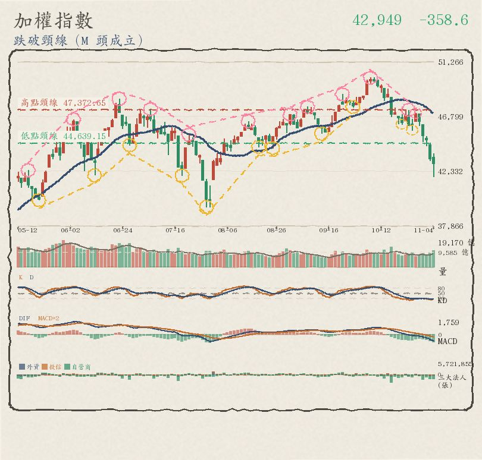
圖說：加權指數日 K（與個股圖相同標記）：黃圈＝轉折低點、粉圈＝轉折高點、虛線小圈＝還沒確認的轉折、藍線＝月線 MA20、水平虛線＝高點／低點頸線。最後一根是資料日當天。
本區塊為公開資料的技術面觀察，不構成投資建議，
不報牌、不預測、不下買賣決策。成交金額為集中市場總成交金額（含 ETF／權證），
與頁首摘要的「上市個股成交金額」口徑不同。標籤是統計，不是評分、也不是推薦。
上市 vs 上櫃（同期快篩）
加權 -0.83% vs 櫃買 -0.58%（同向） → 同向
（兩個市場分開寫，不合併成一個數字；櫃買為 TPEX 公開資料）
櫃買歷史：TPEX 逐日回補 130 根；來源：櫃買中心 www/zh-tw/indexInfo/sectinx（逐日，官方；OpenAPI tpex_index 只回當月）
（TPEX OpenAPI 只回當月，故逐日回補；歷史不足就不算該條均線並標「資料不足」，不用錯數字）
近 20 個交易日大盤狀態回溯（最新在上）（點開看逐日主狀態／量比／量價象限）
用同一支程式回算最近 20 個交易日（主狀態 S1~S8 與量比 20 皆為當日收盤當時的判定，
不是事後調整）；量比 20 未公布的日子寫「—」。
好條件最多的（前 10）
不好條件最多的（前 10）
本期市場狀態：空頭（等權指數在 60 日均線之下）（空頭期間：趨勢類條件反向（回測後 20 日差距 −0.9% ~ −2.1%），本排行改用超跌反轉類（跌破前低／在月線之下／月線下彎））
好條件（4 項）：跌破前低、在月線之下、月線下彎、外資買超。
不好條件（5 項）：站上月線、月線向上、突破頸線、量價攻擊（收紅＋大量）、外資賣超。
兩邊都是同一組資料（日線結構＋當日收盤量價籌碼）算出來的「符合項目數」，只是方向相反；
條件數不是評分、也不是推薦，不構成投資建議。
上升趨勢：底底高 ＋ 頭頭高（4 上市 3／上櫃 1）
量價攻擊（收紅＋大量）（22 上市 17／上櫃 5）
跌破前低（線型轉弱）（58 上市 42／上櫃 16）
逐檔分析（70 檔）
區間或轉弱 成交金額 1222.93 億・全榜第 1 名（上市第 1 名）
好條件 3/4：跌破前低、在月線之下、月線下彎
不好條件 1/5：外資賣超
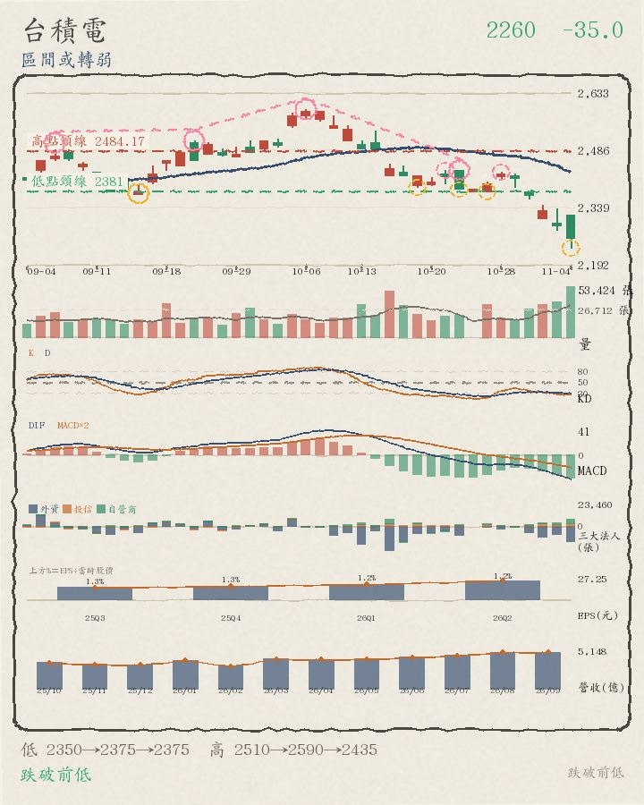
今天帶量收黑、跌破月線 2430.5，跌破前一個轉折低點（高點頸線 2484.17 還在收盤上方），轉折還沒走出明顯方向。
- 月線位置：收盤 2260 在月線 2430.5 之下；5 日線 2334 也在月線之下（短均在下）；月線走平或向下、5 日線走平或向下
- 量能：成交量是 20 日均量的 2.05 倍，比 20 日均量大不少；收黑卻量增，量價背離
- 關鍵價位：高點頸線 2484.17 還沒突破、還在收盤上方 9.0%；最近轉折高點 2435（低於 7.2%）；最近轉折低點 2375（低於 4.8%）
- 轉折結構：低點 2350、2375、2375 與高點 2510、2590、2435 都沒有明顯遞增，屬於區間震盪或轉弱；還沒確認的轉折低點 10-27 2380、11-04 2235；還沒確認的轉折高點 10-21 2435、10-28 2430（圖上虛線小圈）
底部墊高、未過前高 成交金額 589.87 億・全榜第 2 名（上市第 2 名）
好條件 3/4：跌破前低、在月線之下、月線下彎
不好條件 2/5：量價攻擊（收紅＋大量）、外資賣超
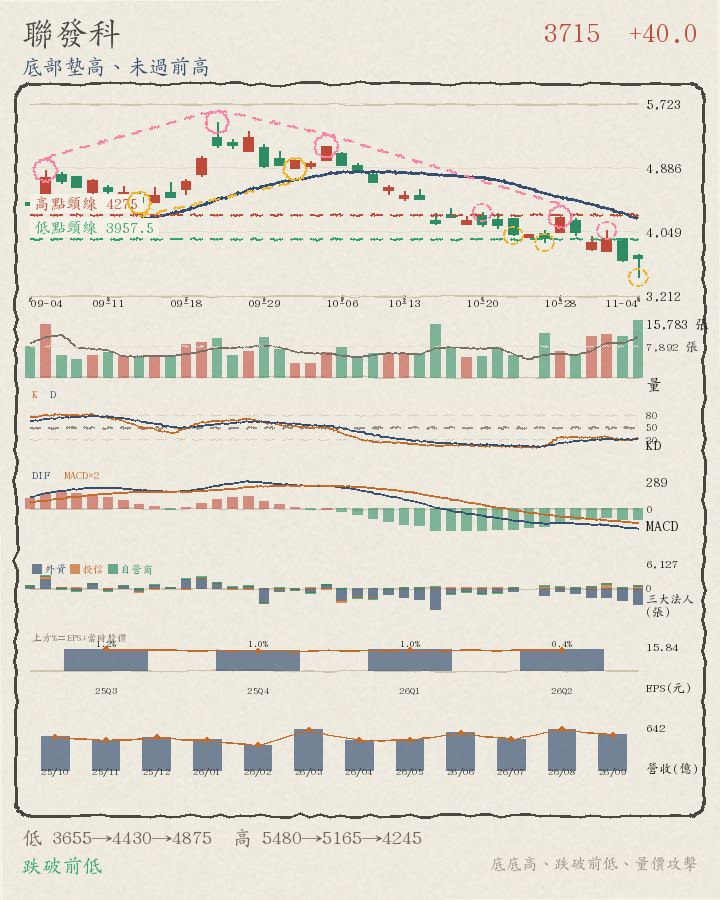
今天帶量收紅、跌破月線 4225.75，跌破前一個轉折低點（高點頸線 4275 還在收盤上方），底部還在墊高（但高點沒同步創高）。
- 月線位置：收盤 3715 在月線 4225.75 之下；5 日線 3864 也在月線之下（短均在下）；月線走平或向下、5 日線走平或向下
- 量能：成交量是 20 日均量的 1.96 倍，比 20 日均量大不少；收紅又量增，量價配合
- 關鍵價位：高點頸線 4275 還沒突破、還在收盤上方 13.1%；最近轉折高點 4245（低於 12.5%）；最近轉折低點 4875（低於 23.8%）
- 轉折結構：低點 3655、4430、4875 墊高 33.4%（底底高），但高點 5480、5165、4245 沒有同步創高；還沒確認的轉折低點 10-27 3910、11-04 3455；還沒確認的轉折高點 10-20 4305、11-02 4070（圖上虛線小圈）
區間或轉弱 成交金額 324.89 億・全榜第 3 名（上市第 3 名）
好條件 2/4：跌破前低、在月線之下
不好條件 3/5：月線向上、量價攻擊（收紅＋大量）、外資賣超
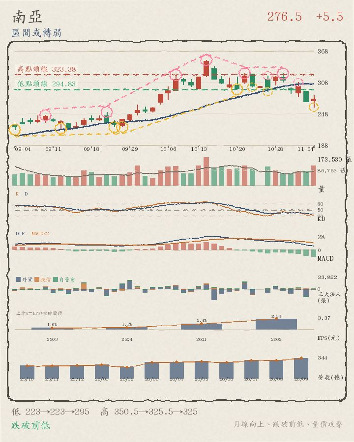
今天帶量收紅、跌破月線 305.225，跌破前一個轉折低點（高點頸線 323.38 還在收盤上方），轉折還沒走出明顯方向。
- 月線位置：收盤 276.5 在月線 305.225 之下；5 日線 291.3 也在月線之下（短均在下）；月線向上、5 日線走平或向下
- 量能：成交量是 20 日均量的 1.18 倍，比 20 日均量大不少；收紅又量增，量價配合
- 關鍵價位：高點頸線 323.38 還沒突破、還在收盤上方 14.5%；最近轉折高點 325（低於 14.9%）；最近轉折低點 295（低於 6.3%）
- 轉折結構：低點 223、223、295 與高點 350.5、325.5、325 都沒有明顯遞增，屬於區間震盪或轉弱；還沒確認的轉折低點 10-27 290.5、11-04 261；還沒確認的轉折高點 10-27 321、11-02 308（圖上虛線小圈）
高點墊高、底部不穩 成交金額 322.99 億・全榜第 4 名（上市第 4 名）
好條件 3/4：跌破前低、在月線之下、月線下彎
不好條件 1/5：外資賣超
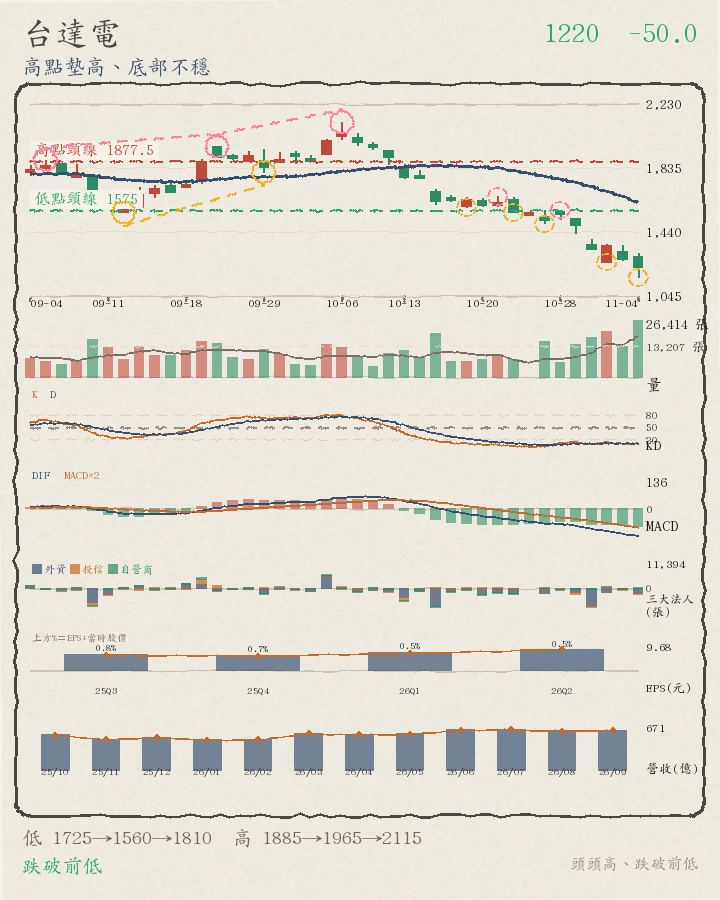
今天帶量收黑、跌破月線 1622，跌破前一個轉折低點（高點頸線 1877.5 還在收盤上方），高點還在墊高（但底部沒同步墊高）。
- 月線位置：收盤 1220 在月線 1622 之下；5 日線 1332 也在月線之下（短均在下）；月線走平或向下、5 日線走平或向下
- 量能：成交量是 20 日均量的 2.20 倍，比 20 日均量大不少；收黑卻量增，量價背離
- 關鍵價位：高點頸線 1877.5 還沒突破、還在收盤上方 35.0%；最近轉折高點 2115（低於 42.3%）；最近轉折低點 1810（低於 32.6%）
- 轉折結構：高點 1885、1965、2115 墊高 12.2%（頭頭高），但低點 1725、1560、1810 沒有同步墊高；還沒確認的轉折低點 11-02 1255、11-04 1160；還沒確認的轉折高點 10-21 1660、10-28 1575（圖上虛線小圈）
底部墊高、未過前高 成交金額 293.78 億・全榜第 5 名（上市第 5 名）
好條件 3/4：跌破前低、在月線之下、月線下彎
不好條件 1/5：外資賣超
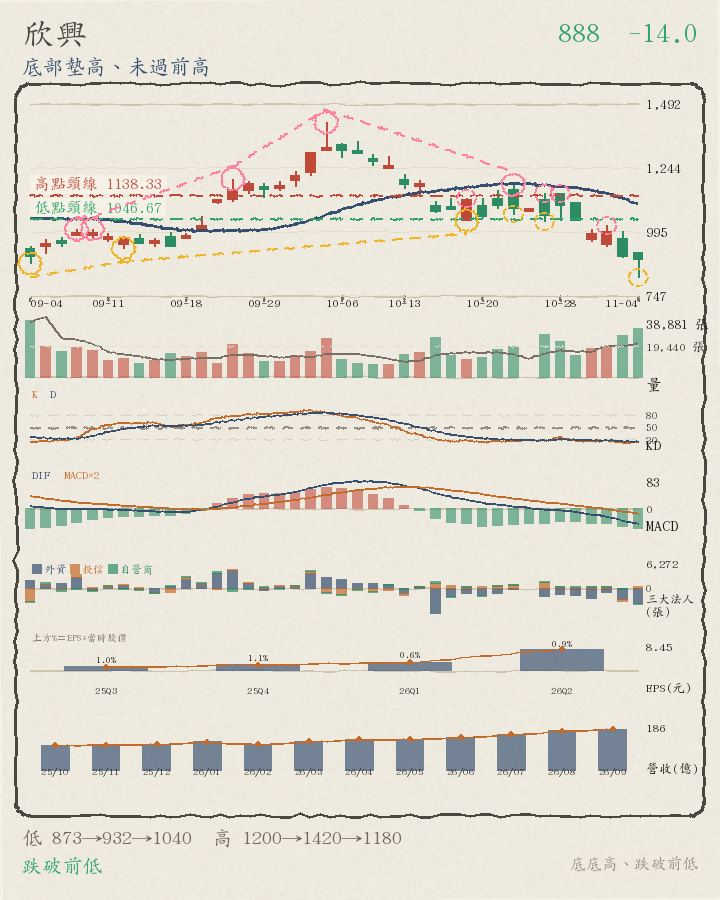
今天帶量收黑、跌破月線 1104.55，跌破前一個轉折低點（高點頸線 1138.33 還在收盤上方），底部還在墊高（但高點沒同步創高）。
- 月線位置：收盤 888 在月線 1104.55 之下；5 日線 963.2 也在月線之下（短均在下）；月線走平或向下、5 日線走平或向下
- 量能：成交量是 20 日均量的 1.87 倍，比 20 日均量大不少；收黑卻量增，量價背離
- 關鍵價位：高點頸線 1138.33 還沒突破、還在收盤上方 22.0%；最近轉折高點 1180（低於 24.7%）；最近轉折低點 1040（低於 14.6%）
- 轉折結構：低點 873、932、1040 墊高 19.1%（底底高），但高點 1200、1420、1180 沒有同步創高；還沒確認的轉折低點 10-27 1035、11-04 819；還沒確認的轉折高點 10-28 1145、11-02 1020（圖上虛線小圈）
區間或轉弱 成交金額 275.2 億・全榜第 6 名（上市第 6 名）
好條件 3/4：跌破前低、在月線之下、月線下彎
不好條件 2/5：量價攻擊（收紅＋大量）、外資賣超
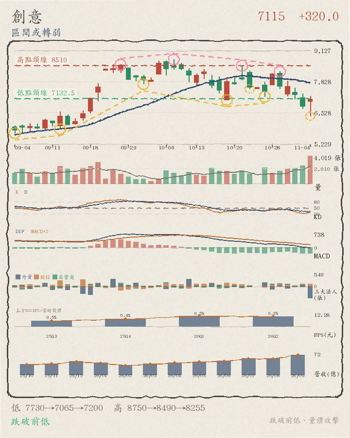
今天帶量收紅、跌破月線 7780，跌破前一個轉折低點（高點頸線 8510 還在收盤上方），轉折還沒走出明顯方向。
- 月線位置：收盤 7115 在月線 7780 之下；5 日線 7294 也在月線之下（短均在下）；月線走平或向下、5 日線走平或向下
- 量能：成交量是 20 日均量的 2.37 倍，比 20 日均量大不少；收紅又量增，量價配合
- 關鍵價位：高點頸線 8510 還沒突破、還在收盤上方 16.4%；最近轉折高點 8255（低於 13.8%）；最近轉折低點 7200（低於 1.2%）
- 轉折結構：低點 7730、7065、7200 與高點 8750、8490、8255 都沒有明顯遞增，屬於區間震盪或轉弱；還沒確認的轉折低點 10-22 7530、11-04 6390（圖上虛線小圈）
區間或轉弱 成交金額 274.73 億・全榜第 7 名（上市第 7 名）
好條件 3/4：跌破前低、在月線之下、月線下彎
不好條件 1/5：外資賣超
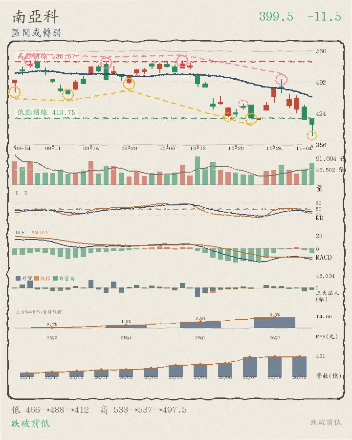
今天帶量收黑、跌破月線 459.625，跌破前一個轉折低點（高點頸線 536.67 還在收盤上方），轉折還沒走出明顯方向。
- 月線位置：收盤 399.5 在月線 459.625 之下；5 日線 439.7 也在月線之下（短均在下）；月線走平或向下、5 日線向上
- 量能：成交量是 20 日均量的 1.49 倍，比 20 日均量大不少；收黑卻量增，量價背離
- 關鍵價位：高點頸線 536.67 還沒突破、還在收盤上方 25.6%；最近轉折高點 497.5（低於 19.7%）；最近轉折低點 412（低於 3.0%）
- 轉折結構：低點 465.5、488、412 與高點 533、537、497.5 都沒有明顯遞增，屬於區間震盪或轉弱；還沒確認的轉折低點 10-19 415.5、11-04 375.5；還沒確認的轉折高點 10-21 444（圖上虛線小圈）
底部墊高、未過前高 成交金額 262.35 億・全榜第 9 名（上市第 8 名）
好條件 3/4：跌破前低、在月線之下、月線下彎
不好條件 2/5：量價攻擊（收紅＋大量）、外資賣超
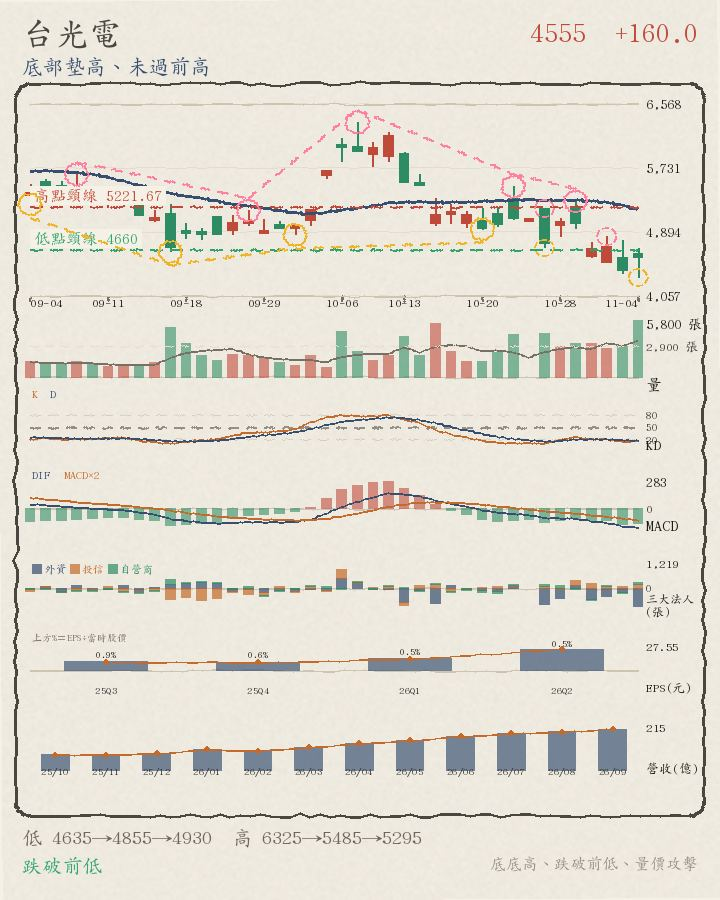
今天帶量收紅、跌破月線 5188，跌破前一個轉折低點（高點頸線 5221.67 還在收盤上方），底部還在墊高（但高點沒同步創高）。
- 月線位置：收盤 4555 在月線 5188 之下；5 日線 4668 也在月線之下（短均在下）；月線走平或向下、5 日線走平或向下
- 量能：成交量是 20 日均量的 1.94 倍，比 20 日均量大不少；收紅又量增，量價配合
- 關鍵價位：高點頸線 5221.67 還沒突破、還在收盤上方 12.8%；最近轉折高點 5295（低於 14.0%）；最近轉折低點 4930（低於 7.6%）
- 轉折結構：低點 4635、4855、4930 墊高 6.4%（底底高），但高點 6325、5485、5295 沒有同步創高；還沒確認的轉折低點 10-27 4685、11-04 4300；還沒確認的轉折高點 10-27 5200、11-02 4835（圖上虛線小圈）
高點墊高、底部不穩 成交金額 260.86 億・全榜第 10 名（上市第 9 名）
好條件 3/4：跌破前低、在月線之下、月線下彎
不好條件 2/5：量價攻擊（收紅＋大量）、外資賣超
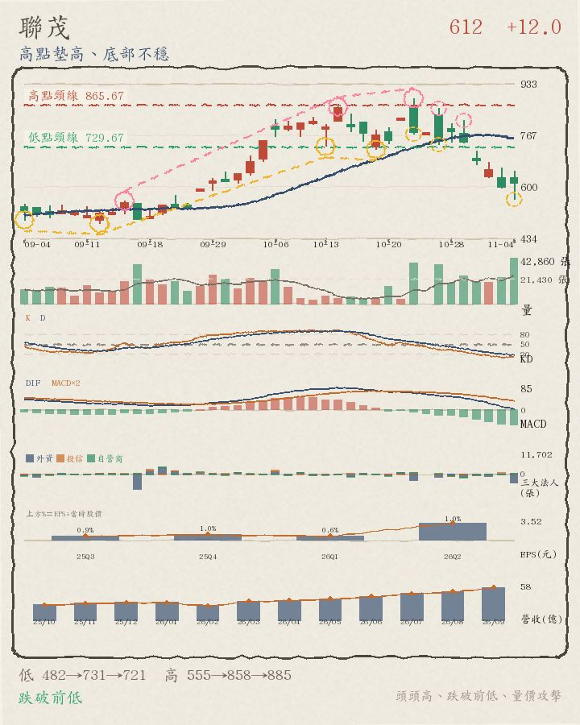
今天帶量收紅、跌破月線 757.1，跌破前一個轉折低點（高點頸線 865.67 還在收盤上方），高點還在墊高（但底部沒同步墊高）。
- 月線位置：收盤 612 在月線 757.1 之下；5 日線 660 也在月線之下（短均在下）；月線走平或向下、5 日線走平或向下
- 量能：成交量是 20 日均量的 2.65 倍，比 20 日均量大不少；收紅又量增，量價配合
- 關鍵價位：高點頸線 865.67 還沒突破、還在收盤上方 29.3%；最近轉折高點 885（低於 30.8%）；最近轉折低點 721（低於 15.1%）
- 轉折結構：高點 555、858、885 墊高 59.5%（頭頭高），但低點 482、731、721 沒有同步墊高；還沒確認的轉折低點 10-27 737、11-04 560；還沒確認的轉折高點 10-27 854、10-29 815（圖上虛線小圈）
區間或轉弱 成交金額 250.06 億・全榜第 11 名（上市第 10 名）
好條件 3/4：跌破前低、在月線之下、月線下彎
不好條件 1/5：外資賣超
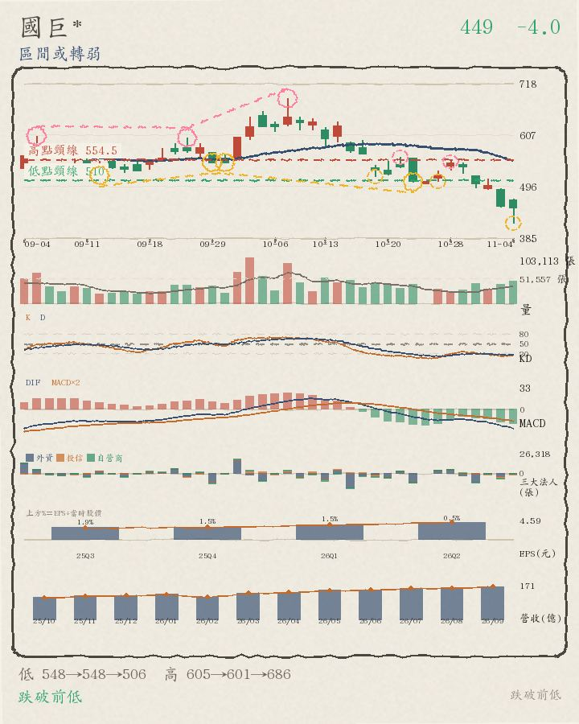
今天帶量收黑、跌破月線 551.775，跌破前一個轉折低點（高點頸線 554.5 還在收盤上方），轉折還沒走出明顯方向。
- 月線位置：收盤 449 在月線 551.775 之下；5 日線 489.1 也在月線之下（短均在下）；月線走平或向下、5 日線走平或向下
- 量能：成交量是 20 日均量的 1.17 倍，比 20 日均量大不少；收黑卻量增，量價背離
- 關鍵價位：高點頸線 554.5 還沒突破、還在收盤上方 19.0%；最近轉折高點 686（低於 34.5%）；最近轉折低點 506（低於 11.3%）
- 轉折結構：低點 548、548、506 與高點 605、601、686 都沒有明顯遞增，屬於區間震盪或轉弱；還沒確認的轉折低點 10-27 507、11-04 417；還沒確認的轉折高點 10-21 559、10-28 550（圖上虛線小圈）
區間或轉弱 成交金額 198.17 億・全榜第 13 名（上市第 11 名）
好條件 3/4：跌破前低、在月線之下、月線下彎
不好條件 2/5：量價攻擊（收紅＋大量）、外資賣超
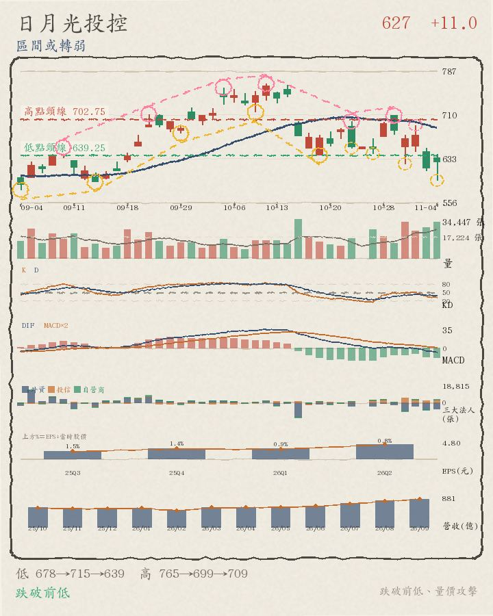
今天帶量收紅、跌破月線 687.45，跌破前一個轉折低點（高點頸線 702.75 還在收盤上方），轉折還沒走出明顯方向。
- 月線位置：收盤 627 在月線 687.45 之下；5 日線 653.6 也在月線之下（短均在下）；月線走平或向下、5 日線走平或向下
- 量能：成交量是 20 日均量的 1.80 倍，比 20 日均量大不少；收紅又量增，量價配合
- 關鍵價位：高點頸線 702.75 還沒突破、還在收盤上方 10.8%；最近轉折高點 709（低於 11.6%）；最近轉折低點 639（低於 1.9%）
- 轉折結構：低點 678、715、639 與高點 765、699、709 都沒有明顯遞增，屬於區間震盪或轉弱；還沒確認的轉折低點 10-30 624、11-04 595；還沒確認的轉折高點 11-02 692（圖上虛線小圈）
區間或轉弱 成交金額 195.45 億・全榜第 14 名（上市第 12 名）
好條件 2/4：在月線之下、月線下彎
不好條件 2/5：量價攻擊（收紅＋大量）、外資賣超
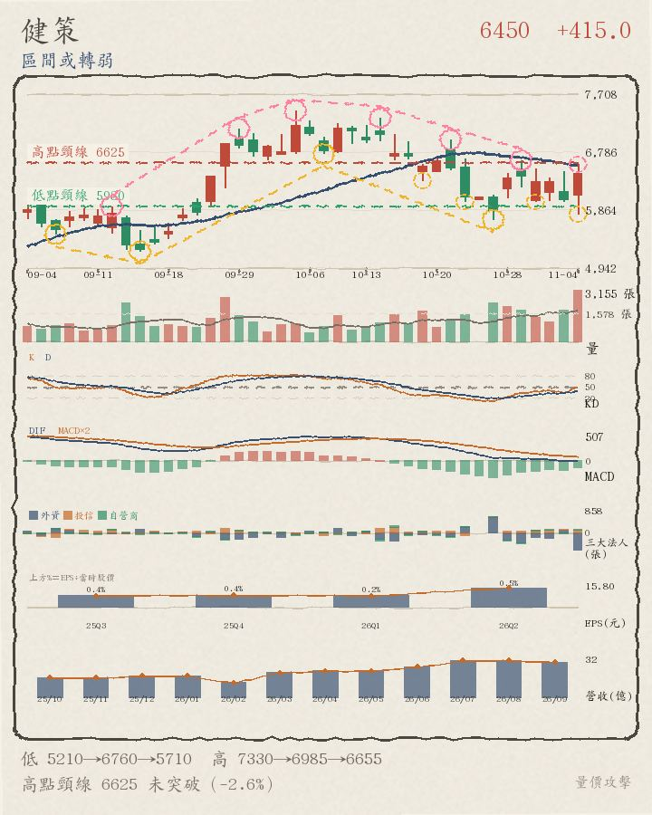
今天帶量收紅、跌破月線 6570.5，離高點頸線 6625 還差 2.6%，轉折還沒走出明顯方向。
- 月線位置：收盤 6450 在月線 6570.5 之下；5 日線 6305 也在月線之下（短均在下）；月線走平或向下、5 日線向上
- 量能：成交量是 20 日均量的 2.29 倍，比 20 日均量大不少；收紅又量增，量價配合
- 關鍵價位：高點頸線 6625 還沒突破，差 2.6%；最近轉折高點 6655（低於 3.1%）；最近轉折低點 5710（高於 13.0%）
- 轉折結構：低點 5210、6760、5710 與高點 7330、6985、6655 都沒有明顯遞增，屬於區間震盪或轉弱；還沒確認的轉折低點 10-30 5995、11-04 5800；還沒確認的轉折高點 11-04 6595（圖上虛線小圈）
底部墊高、未過前高 成交金額 185.77 億・全榜第 15 名（上市第 13 名）
好條件 0/4：無
不好條件 3/5：站上月線、月線向上、外資賣超
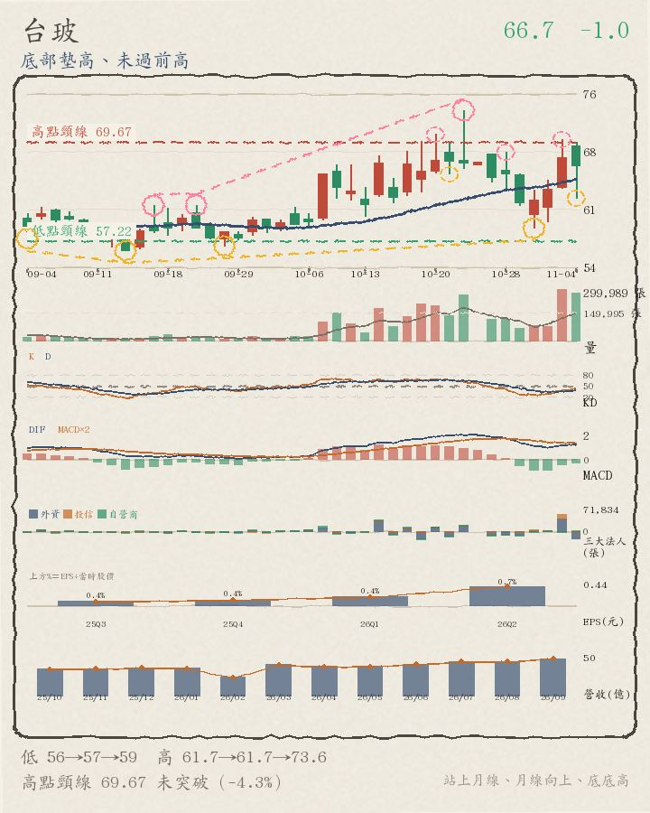
今天帶量收黑、站上月線 64.965，離高點頸線 69.67 還差 4.3%，底部還在墊高（但高點沒同步創高）。
- 月線位置：收盤 66.7 在月線 64.965 之上；5 日線 64.48 也在月線之下（短均在下）；月線向上、5 日線走平或向下
- 量能：成交量是 20 日均量的 2.14 倍，比 20 日均量大不少；收黑卻量增，量價背離
- 關鍵價位：高點頸線 69.67 還沒突破，差 4.3%；最近轉折高點 73.6（低於 9.4%）；最近轉折低點 58.8（高於 13.4%）
- 轉折結構：低點 56、56.6、58.8 墊高 5.0%（底底高），但高點 61.7、61.7、73.6 沒有同步創高；還沒確認的轉折低點 10-21 65.6、11-04 62.6；還沒確認的轉折高點 10-28 68.4、11-03 70（圖上虛線小圈）
底部墊高、未過前高 成交金額 166.76 億・全榜第 16 名（上市第 14 名）
好條件 3/4：跌破前低、在月線之下、月線下彎
不好條件 2/5：量價攻擊（收紅＋大量）、外資賣超
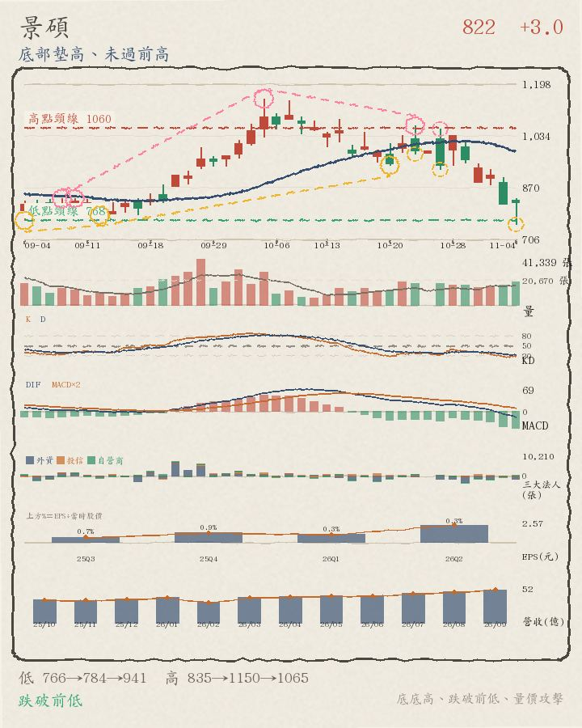
今天帶量收紅、跌破月線 985.05，跌破前一個轉折低點（高點頸線 1060 還在收盤上方），底部還在墊高（但高點沒同步創高）。
- 月線位置：收盤 822 在月線 985.05 之下；5 日線 888.4 也在月線之下（短均在下）；月線走平或向下、5 日線走平或向下
- 量能：成交量是 20 日均量的 1.38 倍，比 20 日均量大不少；收紅又量增，量價配合
- 關鍵價位：高點頸線 1060 還沒突破、還在收盤上方 22.5%；最近轉折高點 1065（低於 22.8%）；最近轉折低點 941（低於 12.6%）
- 轉折結構：低點 766、784、941 墊高 22.8%（底底高），但高點 835、1150、1065 沒有同步創高；還沒確認的轉折低點 10-27 928、11-04 754；還沒確認的轉折高點 10-27 1055（圖上虛線小圈）
底部墊高、未過前高 成交金額 165.76 億・全榜第 17 名（上市第 15 名）
好條件 3/4：跌破前低、在月線之下、月線下彎
不好條件 2/5：量價攻擊（收紅＋大量）、外資賣超
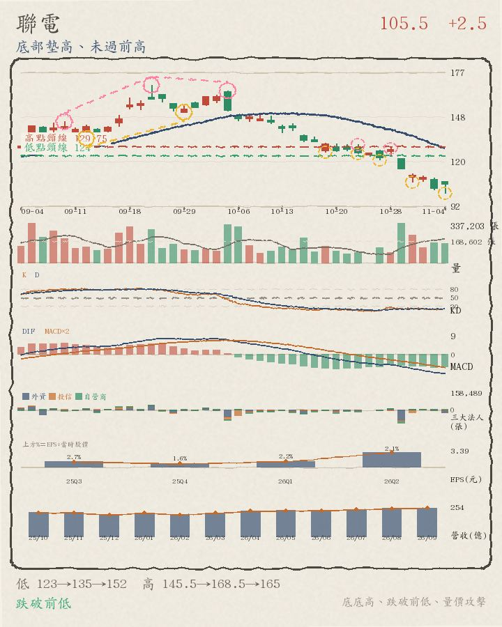
今天收紅、跌破月線 128.625，跌破前一個轉折低點（高點頸線 129.75 還在收盤上方），底部還在墊高（但高點沒同步創高）。
- 月線位置：收盤 105.5 在月線 128.625 之下；5 日線 109.1 也在月線之下（短均在下）；月線走平或向下、5 日線走平或向下
- 量能：成交量是 20 日均量的 1.02 倍，跟 20 日均量差不多
- 關鍵價位：高點頸線 129.75 還沒突破、還在收盤上方 18.7%；最近轉折高點 165（低於 36.1%）；最近轉折低點 151.5（低於 30.4%）
- 轉折結構：低點 123、135、151.5 墊高 23.2%（底底高），但高點 145.5、168.5、165 沒有同步創高；還沒確認的轉折低點 10-30 107、11-04 100；還沒確認的轉折高點 10-22 131、10-28 128.5（圖上虛線小圈）
區間或轉弱 成交金額 165.37 億・全榜第 18 名（上市第 16 名）
好條件 3/4：跌破前低、在月線之下、月線下彎
不好條件 1/5：外資賣超
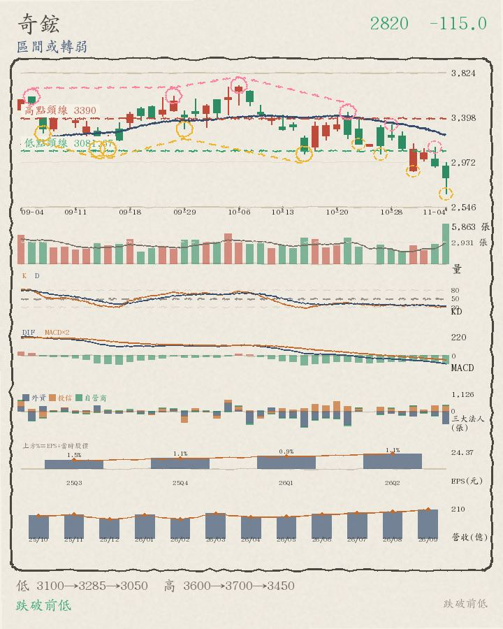
今天帶量收黑、跌破月線 3229，跌破前一個轉折低點（高點頸線 3390 還在收盤上方），轉折還沒走出明顯方向。
- 月線位置：收盤 2820 在月線 3229 之下；5 日線 3003 也在月線之下（短均在下）；月線走平或向下、5 日線走平或向下
- 量能：成交量是 20 日均量的 2.12 倍，比 20 日均量大不少；收黑卻量增，量價背離
- 關鍵價位：高點頸線 3390 還沒突破、還在收盤上方 16.8%；最近轉折高點 3450（低於 18.3%）；最近轉折低點 3050（低於 7.5%）
- 轉折結構：低點 3100、3285、3050 與高點 3600、3700、3450 都沒有明顯遞增，屬於區間震盪或轉弱；還沒確認的轉折低點 10-30 2885、11-04 2670；還沒確認的轉折高點 10-28 3330、11-03 3115（圖上虛線小圈）
區間或轉弱 成交金額 150.95 億・全榜第 20 名（上市第 17 名）
好條件 2/4：在月線之下、月線下彎
不好條件 1/5：外資賣超
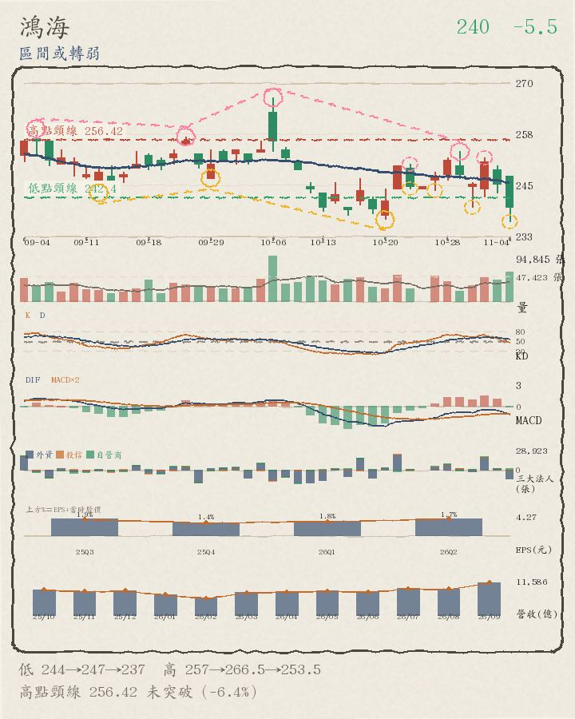
今天帶量收黑、跌破月線 245.9，離高點頸線 256.42 還差 6.4%，轉折還沒走出明顯方向。
- 月線位置：收盤 240 在月線 245.9 之下；5 日線 246 也在月線之上（短均在上）；月線走平或向下、5 日線走平或向下
- 量能：成交量是 20 日均量的 1.44 倍，比 20 日均量大不少；收黑卻量增，量價背離
- 關鍵價位：高點頸線 256.42 還沒突破，差 6.4%；最近轉折高點 253.5（低於 5.3%）；最近轉折低點 237（高於 1.3%）
- 轉折結構：低點 243.5、247、237 與高點 257、266.5、253.5 都沒有明顯遞增，屬於區間震盪或轉弱；還沒確認的轉折低點 10-30 240、11-04 236.5；還沒確認的轉折高點 10-22 250.5、11-02 252（圖上虛線小圈）
底部墊高、未過前高 成交金額 146.45 億・全榜第 22 名（上市第 18 名）
好條件 3/4：跌破前低、在月線之下、月線下彎
不好條件 1/5：外資賣超
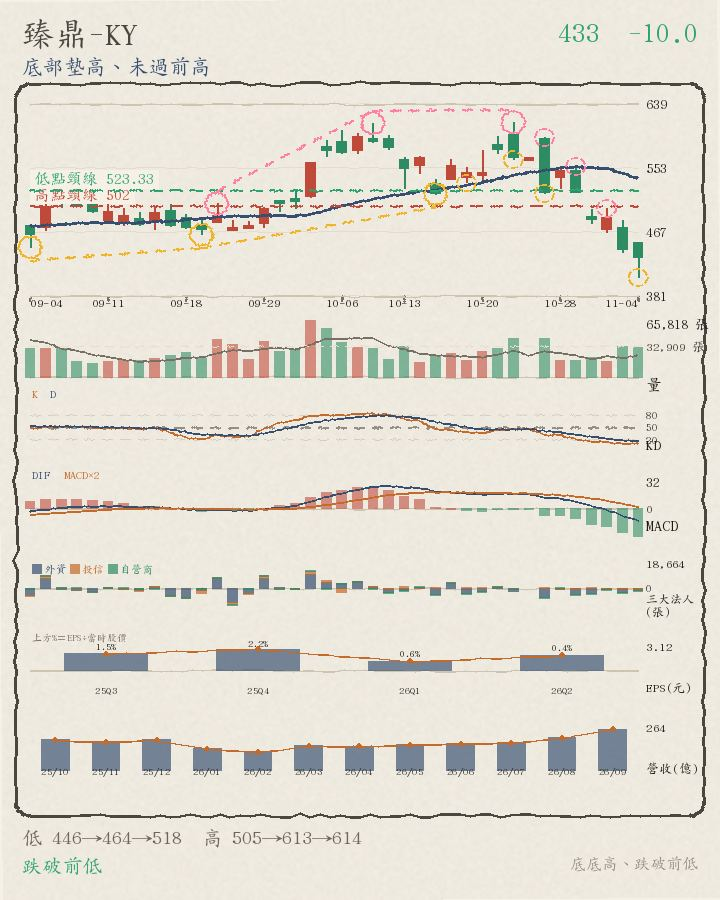
今天帶量收黑、跌破月線 539.1，跌破前一個轉折低點（高點頸線 502 還在收盤上方），底部還在墊高（但高點沒同步創高）。
- 月線位置：收盤 433 在月線 539.1 之下；5 日線 473.8 也在月線之下（短均在下）；月線走平或向下、5 日線走平或向下
- 量能：成交量是 20 日均量的 1.14 倍，比 20 日均量大一些；收黑卻量增，量價背離
- 關鍵價位：高點頸線 502 還沒突破、還在收盤上方 13.7%；最近轉折高點 614（低於 29.5%）；最近轉折低點 518（低於 16.4%）
- 轉折結構：低點 446.5、463.5、518 墊高 16.0%（底底高），但高點 505、613、614 沒有同步創高；還沒確認的轉折低點 10-27 519、11-04 406；還沒確認的轉折高點 10-29 555、11-02 499（圖上虛線小圈）
底部墊高、未過前高 成交金額 146.44 億・全榜第 23 名（上市第 19 名）
好條件 2/4：在月線之下、月線下彎
不好條件 2/5：量價攻擊（收紅＋大量）、外資賣超
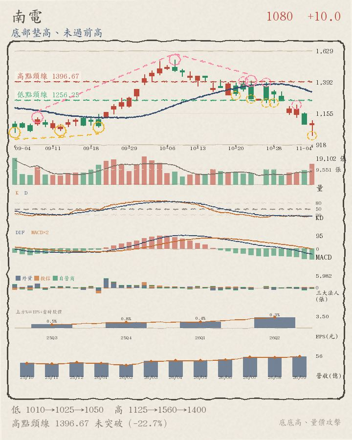
今天帶量收紅、跌破月線 1317.75，離高點頸線 1396.67 還差 22.7%，底部還在墊高（但高點沒同步創高）。
- 月線位置：收盤 1080 在月線 1317.75 之下；5 日線 1155 也在月線之下（短均在下）；月線走平或向下、5 日線走平或向下
- 量能：成交量是 20 日均量的 1.68 倍，比 20 日均量大不少；收紅又量增，量價配合
- 關鍵價位：高點頸線 1396.67 還沒突破，差 22.7%；最近轉折高點 1400（低於 22.9%）；最近轉折低點 1050（高於 2.9%）
- 轉折結構：低點 1010、1025、1050 墊高 4.0%（底底高），但高點 1125、1560、1400 沒有同步創高；還沒確認的轉折低點 10-28 1235、11-04 987；還沒確認的轉折高點 10-27 1390、11-02 1220（圖上虛線小圈）
區間或轉弱 成交金額 138.97 億・全榜第 24 名（上市第 20 名）
好條件 3/4：跌破前低、在月線之下、月線下彎
不好條件 1/5：外資賣超
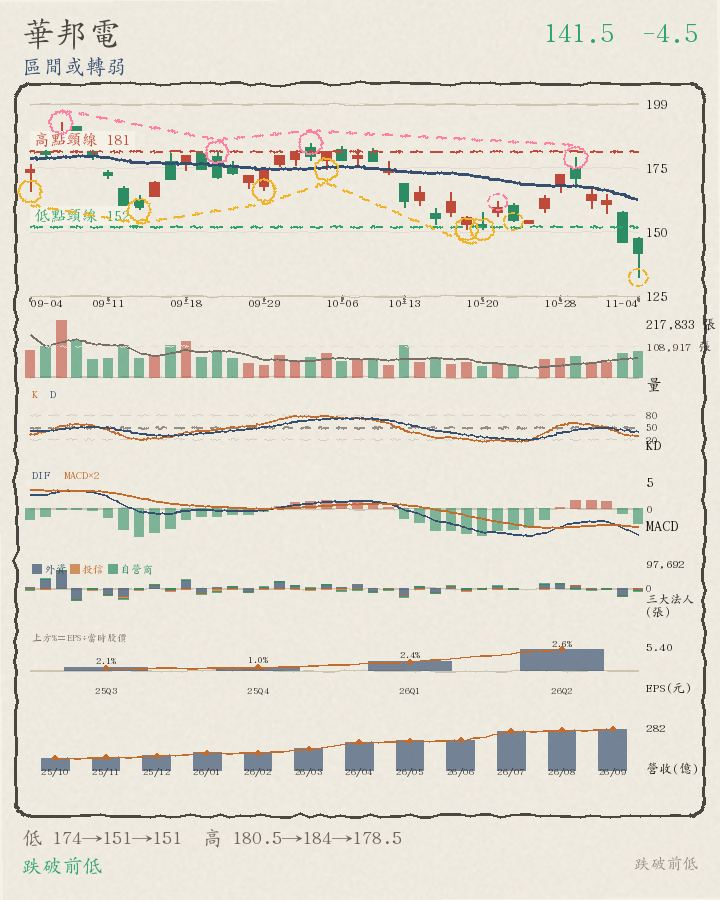
今天帶量收黑、跌破月線 162.35，跌破前一個轉折低點（高點頸線 181 還在收盤上方），轉折還沒走出明顯方向。
- 月線位置：收盤 141.5 在月線 162.35 之下；5 日線 156.9 也在月線之下（短均在下）；月線走平或向下、5 日線走平或向下
- 量能：成交量是 20 日均量的 1.52 倍，比 20 日均量大不少；收黑卻量增，量價背離
- 關鍵價位：高點頸線 181 還沒突破、還在收盤上方 21.8%；最近轉折高點 178.5（低於 20.7%）；最近轉折低點 151（低於 6.3%）
- 轉折結構：低點 174、151、151 與高點 180.5、184、178.5 都沒有明顯遞增，屬於區間震盪或轉弱；還沒確認的轉折低點 10-22 154、11-04 132.5；還沒確認的轉折高點 10-21 161.5（圖上虛線小圈）
區間或轉弱 成交金額 138.78 億・全榜第 25 名（上市第 21 名）
好條件 4/4：跌破前低、在月線之下、月線下彎、外資買超
不好條件 0/5：無
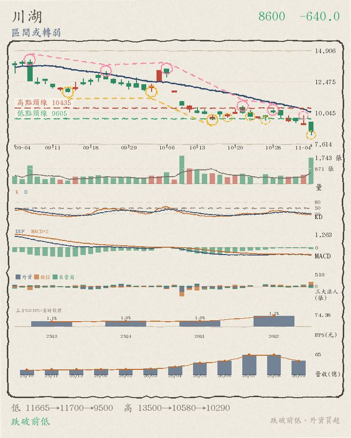
今天帶量收黑、跌破月線 10109.2，跌破前一個轉折低點（高點頸線 10435 還在收盤上方），轉折還沒走出明顯方向。
- 月線位置：收盤 8600 在月線 10109.2 之下；5 日線 9358 也在月線之下（短均在下）；月線走平或向下、5 日線走平或向下
- 量能：成交量是 20 日均量的 2.74 倍，比 20 日均量大不少；收黑卻量增，量價背離
- 關鍵價位：高點頸線 10435 還沒突破、還在收盤上方 17.6%；最近轉折高點 10290（低於 16.4%）；最近轉折低點 9500（低於 9.5%）
- 轉折結構：低點 11665、11700、9500 與高點 13500、10580、10290 都沒有明顯遞增，屬於區間震盪或轉弱；還沒確認的轉折低點 10-27 9475、11-04 8320；還沒確認的轉折高點 11-03 9850（圖上虛線小圈）
區間或轉弱 成交金額 131.6 億・全榜第 26 名（上市第 22 名）
好條件 3/4：跌破前低、在月線之下、月線下彎
不好條件 1/5：外資賣超
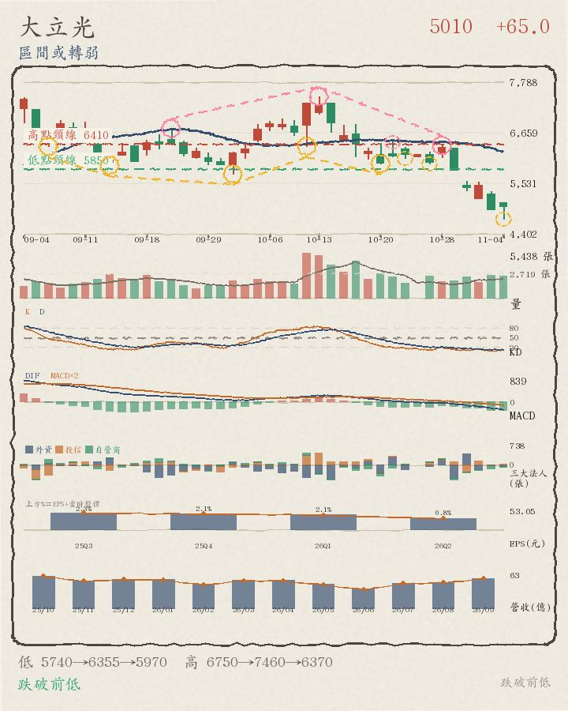
今天收紅、但成交量比平均少、跌破月線 6230.5，跌破前一個轉折低點（高點頸線 6410 還在收盤上方），轉折還沒走出明顯方向。
- 月線位置：收盤 5010 在月線 6230.5 之下；5 日線 5338 也在月線之下（短均在下）；月線走平或向下、5 日線走平或向下
- 量能：成交量是 20 日均量的 0.95 倍，跟 20 日均量差不多；收紅但量縮，量價背離
- 關鍵價位：高點頸線 6410 還沒突破、還在收盤上方 21.8%；最近轉折高點 6370（低於 21.4%）；最近轉折低點 5970（低於 16.1%）
- 轉折結構：低點 5740、6355、5970 與高點 6750、7460、6370 都沒有明顯遞增，屬於區間震盪或轉弱；還沒確認的轉折低點 10-27 5960、11-04 4730；還沒確認的轉折高點 10-21 6450（圖上虛線小圈）
區間或轉弱 成交金額 130.32 億・全榜第 27 名（上市第 23 名）
好條件 3/4：跌破前低、在月線之下、月線下彎
不好條件 1/5：外資賣超
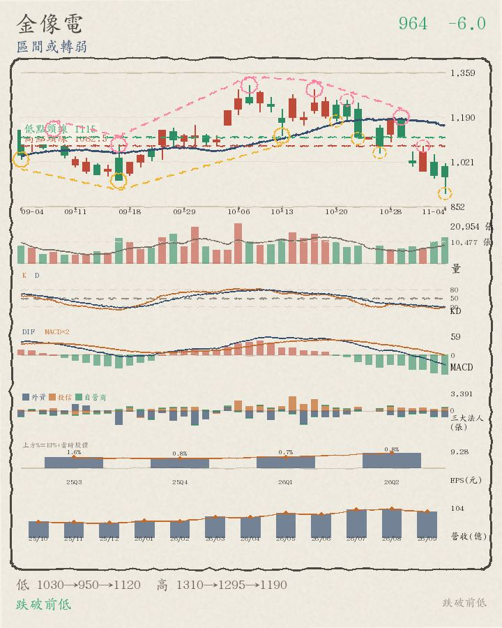
今天帶量收黑、跌破月線 1157.2，跌破前一個轉折低點（高點頸線 1082.5 還在收盤上方），轉折還沒走出明顯方向。
- 月線位置：收盤 964 在月線 1157.2 之下；5 日線 1025.8 也在月線之下（短均在下）；月線走平或向下、5 日線走平或向下
- 量能：成交量是 20 日均量的 1.26 倍，比 20 日均量大不少；收黑卻量增，量價背離
- 關鍵價位：高點頸線 1082.5 還沒突破、還在收盤上方 10.9%；最近轉折高點 1190（低於 19.0%）；最近轉折低點 1120（低於 13.9%）
- 轉折結構：低點 1030、950、1120 與高點 1310、1295、1190 都沒有明顯遞增，屬於區間震盪或轉弱；還沒確認的轉折低點 10-27 1055、11-04 901；還沒確認的轉折高點 10-21 1255、11-02 1080（圖上虛線小圈）
區間或轉弱 成交金額 117.21 億・全榜第 28 名（上市第 24 名）
好條件 4/4：跌破前低、在月線之下、月線下彎、外資買超
不好條件 0/5：無
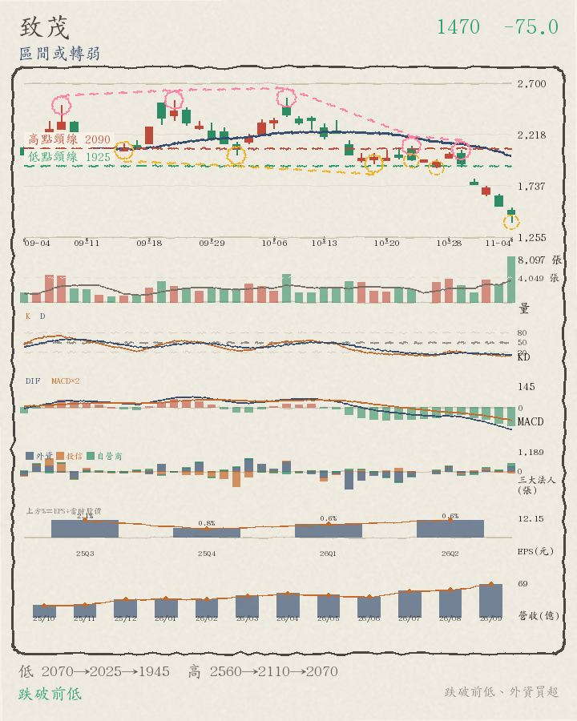
今天帶量收黑、跌破月線 2015.75，跌破前一個轉折低點（高點頸線 2090 還在收盤上方），轉折還沒走出明顯方向。
- 月線位置：收盤 1470 在月線 2015.75 之下；5 日線 1686 也在月線之下（短均在下）；月線走平或向下、5 日線走平或向下
- 量能：成交量是 20 日均量的 2.92 倍，比 20 日均量大不少；收黑卻量增，量價背離
- 關鍵價位：高點頸線 2090 還沒突破、還在收盤上方 29.7%；最近轉折高點 2070（低於 29.0%）；最近轉折低點 1945（低於 24.4%）
- 轉折結構：低點 2070、2025、1945 與高點 2560、2110、2070 都沒有明顯遞增，屬於區間震盪或轉弱；還沒確認的轉折低點 10-27 1905、11-04 1395（圖上虛線小圈）
騰輝電子-KY 6672 上市
529 +27.0
上升趨勢（底底高＋頭頭高） 成交金額 110.35 億・全榜第 29 名（上市第 25 名）
好條件 2/4：跌破前低、在月線之下
不好條件 3/5：月線向上、量價攻擊（收紅＋大量）、外資賣超
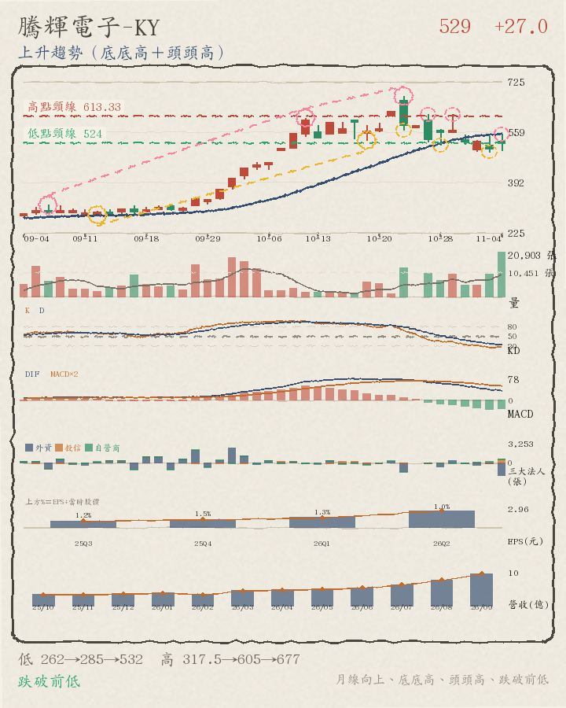
今天帶量收紅、跌破月線 553.875，跌破前一個轉折低點（高點頸線 613.33 還在收盤上方），轉折結構仍是底底高＋頭頭高。
- 月線位置：收盤 529 在月線 553.875 之下；5 日線 530.4 也在月線之下（短均在下）；月線向上、5 日線走平或向下
- 量能：成交量是 20 日均量的 3.67 倍，比 20 日均量大不少；收紅又量增，量價配合
- 關鍵價位：高點頸線 613.33 還沒突破、還在收盤上方 13.7%；最近轉折高點 677（低於 21.9%）；最近轉折低點 532（低於 0.6%）
- 轉折結構：低點 261.5、285、532 一路墊高 103.4%、高點 317.5、605、677 也一路墊高 113.2%，是底底高＋頭頭高；還沒確認的轉折低點 10-28 516、11-03 493.5；還沒確認的轉折高點 10-29 617、11-04 552（圖上虛線小圈）
區間或轉弱 成交金額 104.47 億・全榜第 31 名（上市第 26 名）
好條件 2/4：跌破前低、在月線之下
不好條件 2/5：月線向上、外資賣超
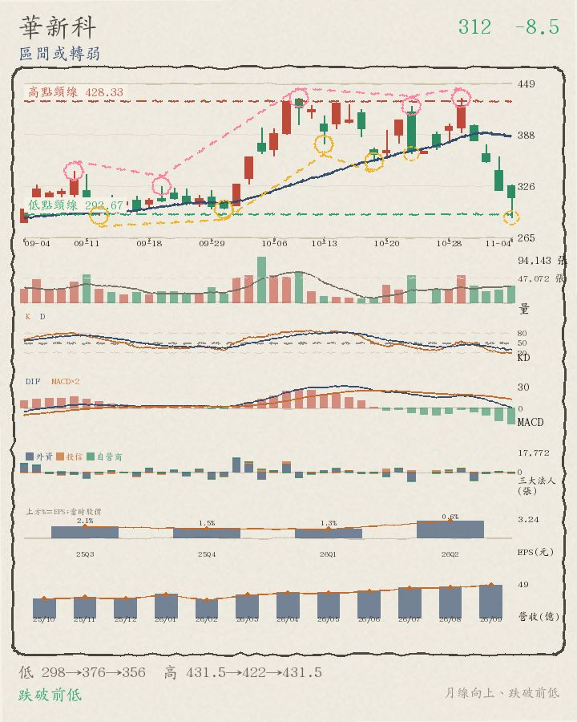
今天收黑、跌破月線 385.575，跌破前一個轉折低點（高點頸線 428.33 還在收盤上方），轉折還沒走出明顯方向。
- 月線位置：收盤 312 在月線 385.575 之下；5 日線 358.5 也在月線之下（短均在下）；月線向上、5 日線走平或向下
- 量能：成交量是 20 日均量的 1.01 倍，跟 20 日均量差不多
- 關鍵價位：高點頸線 428.33 還沒突破、還在收盤上方 27.2%；最近轉折高點 431.5（低於 27.7%）；最近轉折低點 355.5（低於 12.2%）
- 轉折結構：低點 298.5、376.5、355.5 與高點 431.5、422、431.5 都沒有明顯遞增，屬於區間震盪或轉弱；還沒確認的轉折低點 10-22 365、11-04 288.5（圖上虛線小圈）
區間或轉弱 成交金額 96.11 億・全榜第 33 名（上市第 27 名）
好條件 3/4：跌破前低、在月線之下、月線下彎
不好條件 2/5：量價攻擊（收紅＋大量）、外資賣超
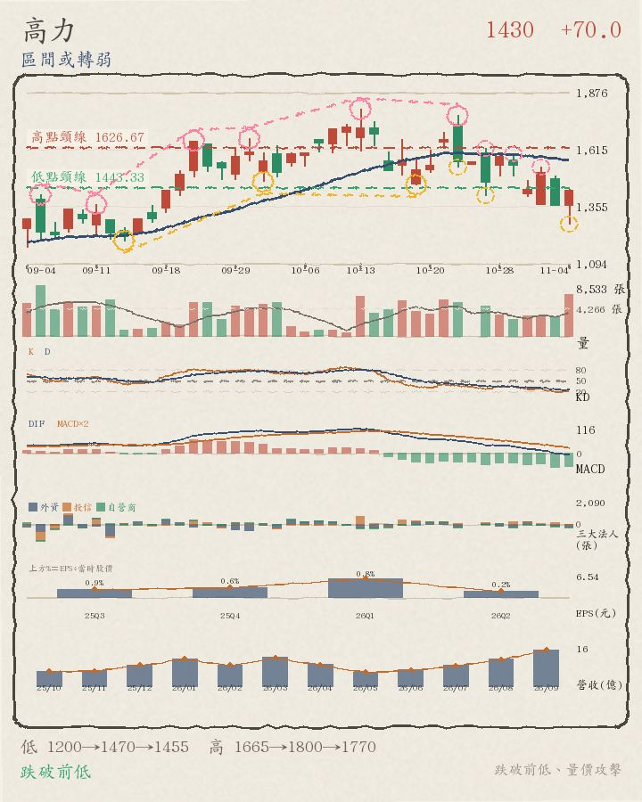
今天帶量收紅、跌破月線 1567.25，跌破前一個轉折低點（高點頸線 1626.67 還在收盤上方），轉折還沒走出明顯方向。
- 月線位置：收盤 1430 在月線 1567.25 之下；5 日線 1456 也在月線之下（短均在下）；月線走平或向下、5 日線走平或向下
- 量能：成交量是 20 日均量的 2.02 倍，比 20 日均量大不少；收紅又量增，量價配合
- 關鍵價位：高點頸線 1626.67 還沒突破、還在收盤上方 12.1%；最近轉折高點 1770（低於 19.2%）；最近轉折低點 1455（低於 1.7%）
- 轉折結構：低點 1200、1470、1455 與高點 1665、1800、1770 都沒有明顯遞增，屬於區間震盪或轉弱；還沒確認的轉折低點 10-27 1405、11-04 1275；還沒確認的轉折高點 10-29 1595、11-02 1535（圖上虛線小圈）
區間或轉弱 成交金額 85.74 億・全榜第 34 名（上市第 28 名）
好條件 4/4：跌破前低、在月線之下、月線下彎、外資買超
不好條件 1/5：量價攻擊（收紅＋大量）
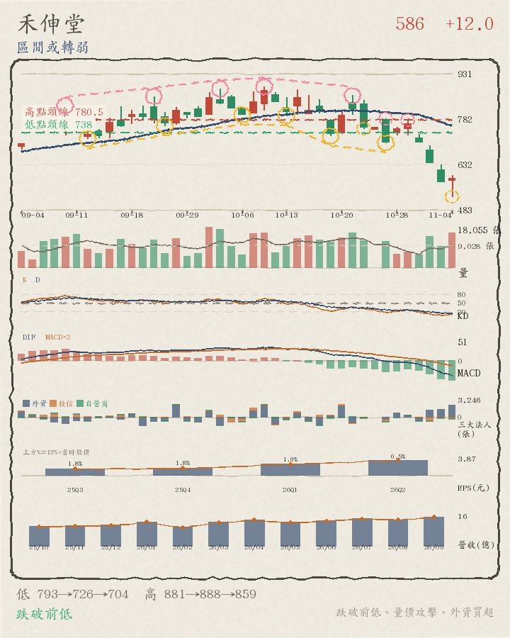
今天帶量收紅、跌破月線 760.65，跌破前一個轉折低點（高點頸線 780.5 還在收盤上方），轉折還沒走出明顯方向。
- 月線位置：收盤 586 在月線 760.65 之下；5 日線 654.2 也在月線之下（短均在下）；月線走平或向下、5 日線走平或向下
- 量能：成交量是 20 日均量的 1.41 倍，比 20 日均量大不少；收紅又量增，量價配合
- 關鍵價位：高點頸線 780.5 還沒突破、還在收盤上方 24.9%；最近轉折高點 859（低於 31.8%）；最近轉折低點 704（低於 16.8%）
- 轉折結構：低點 793、726、704 與高點 881、888、859 都沒有明顯遞增，屬於區間震盪或轉弱；還沒確認的轉折低點 10-22 750、11-04 526；還沒確認的轉折高點 10-27 783、10-29 778（圖上虛線小圈）
區間或轉弱 成交金額 84.89 億・全榜第 35 名（上市第 29 名）
好條件 2/4：跌破前低、在月線之下
不好條件 3/5：月線向上、量價攻擊（收紅＋大量）、外資賣超
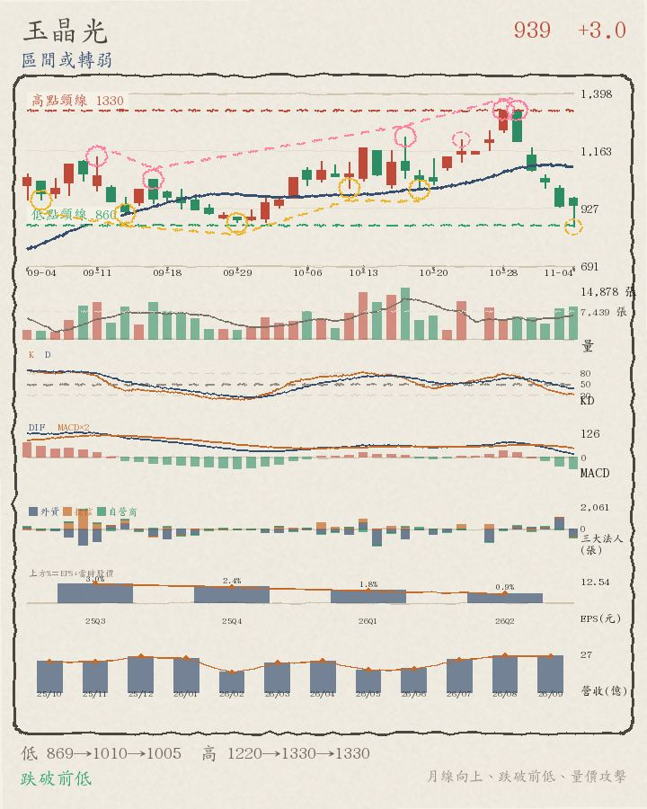
今天帶量收紅、跌破月線 1099，跌破前一個轉折低點（高點頸線 1330 還在收盤上方），轉折還沒走出明顯方向。
- 月線位置：收盤 939 在月線 1099 之下；5 日線 1039 也在月線之下（短均在下）；月線向上、5 日線走平或向下
- 量能：成交量是 20 日均量的 1.21 倍，比 20 日均量大不少；收紅又量增，量價配合
- 關鍵價位：高點頸線 1330 還沒突破、還在收盤上方 29.4%；最近轉折高點 1330（低於 29.4%）；最近轉折低點 1005（低於 6.6%）
- 轉折結構：低點 869、1010、1005 與高點 1220、1330、1330 都沒有明顯遞增，屬於區間震盪或轉弱；還沒確認的轉折低點 11-04 851；還沒確認的轉折高點 10-22 1210（圖上虛線小圈）
區間或轉弱 成交金額 81.04 億・全榜第 38 名（上市第 30 名）
好條件 4/4：跌破前低、在月線之下、月線下彎、外資買超
不好條件 1/5：量價攻擊（收紅＋大量）
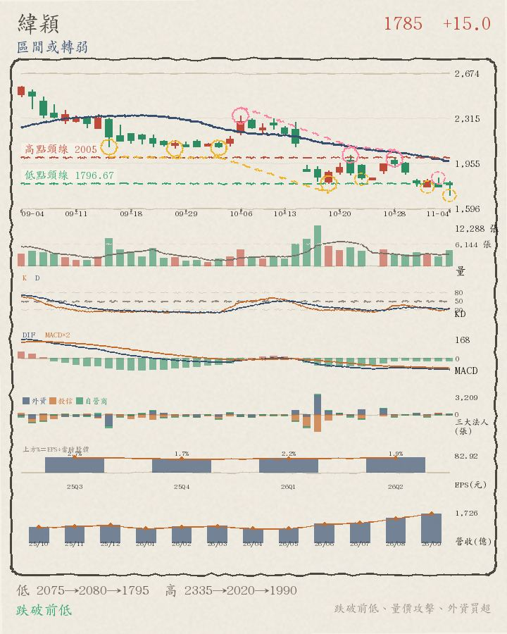
今天收紅、跌破月線 1972.25，跌破前一個轉折低點（高點頸線 2005 還在收盤上方），轉折還沒走出明顯方向。
- 月線位置：收盤 1785 在月線 1972.25 之下；5 日線 1814 也在月線之下（短均在下）；月線走平或向下、5 日線走平或向下
- 量能：成交量是 20 日均量的 1.02 倍，跟 20 日均量差不多
- 關鍵價位：高點頸線 2005 還沒突破、還在收盤上方 11.0%；最近轉折高點 1990（低於 10.3%）；最近轉折低點 1795（低於 0.6%）
- 轉折結構：低點 2075、2080、1795 與高點 2335、2020、1990 都沒有明顯遞增，屬於區間震盪或轉弱；還沒確認的轉折低點 11-02 1765、11-04 1700；還沒確認的轉折高點 11-03 1840（圖上虛線小圈）
區間或轉弱 成交金額 74.36 億・全榜第 39 名（上市第 31 名）
好條件 3/4：跌破前低、在月線之下、月線下彎
不好條件 1/5：外資賣超
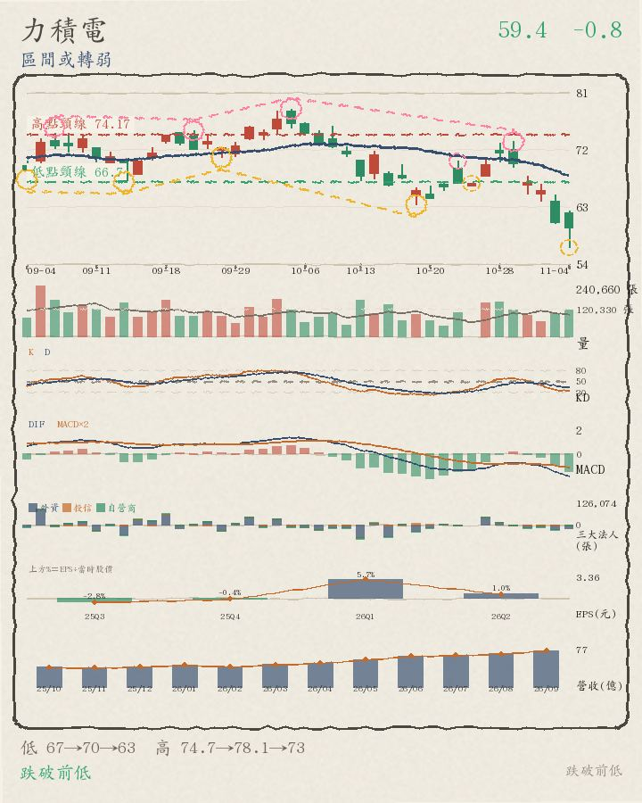
今天帶量收黑、跌破月線 67.63，跌破前一個轉折低點（高點頸線 74.17 還在收盤上方），轉折還沒走出明顯方向。
- 月線位置：收盤 59.4 在月線 67.63 之下；5 日線 64.2 也在月線之下（短均在下）；月線走平或向下、5 日線走平或向下
- 量能：成交量是 20 日均量的 1.19 倍，比 20 日均量大不少；收黑卻量增，量價背離
- 關鍵價位：高點頸線 74.17 還沒突破、還在收盤上方 19.9%；最近轉折高點 73（低於 18.6%）；最近轉折低點 63（低於 5.7%）
- 轉折結構：低點 66.7、70.5、63 與高點 74.7、78.1、73 都沒有明顯遞增，屬於區間震盪或轉弱；還沒確認的轉折低點 10-23 66.4、11-04 56.3；還沒確認的轉折高點 10-22 69.9（圖上虛線小圈）
區間或轉弱 成交金額 72.07 億・全榜第 40 名（上市第 32 名）
好條件 3/4：跌破前低、在月線之下、月線下彎
不好條件 1/5：外資賣超
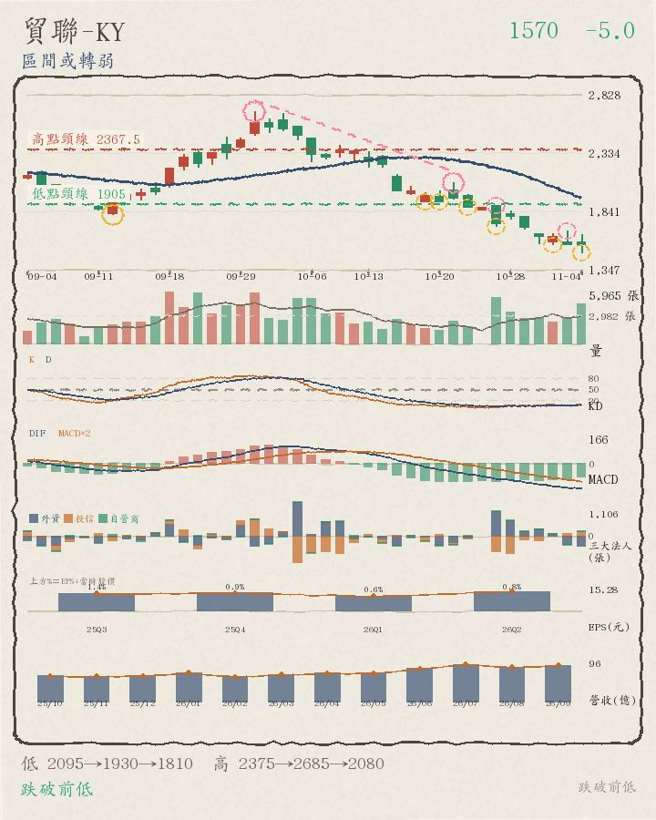
今天帶量收黑、跌破月線 1956.25，跌破前一個轉折低點（高點頸線 2367.5 還在收盤上方），轉折還沒走出明顯方向。
- 月線位置：收盤 1570 在月線 1956.25 之下；5 日線 1620 也在月線之下（短均在下）；月線走平或向下、5 日線走平或向下
- 量能：成交量是 20 日均量的 1.55 倍，比 20 日均量大不少；收黑卻量增，量價背離
- 關鍵價位：高點頸線 2367.5 還沒突破、還在收盤上方 33.7%；最近轉折高點 2080（低於 24.5%）；最近轉折低點 1810（低於 13.3%）
- 轉折結構：低點 2095、1930、1810 與高點 2375、2685、2080 都沒有明顯遞增，屬於區間震盪或轉弱；還沒確認的轉折低點 11-02 1555、11-04 1490；還沒確認的轉折高點 10-27 1890、11-03 1675（圖上虛線小圈）
區間或轉弱 成交金額 67.1 億・全榜第 42 名（上市第 33 名）
好條件 3/4：跌破前低、在月線之下、月線下彎
不好條件 2/5：量價攻擊（收紅＋大量）、外資賣超
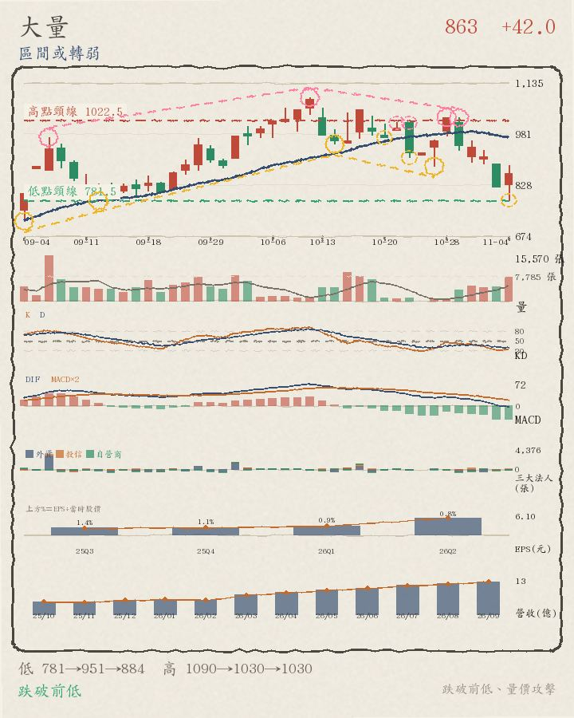
今天帶量收紅、跌破月線 970.95，跌破前一個轉折低點（高點頸線 1022.5 還在收盤上方），轉折還沒走出明顯方向。
- 月線位置：收盤 863 在月線 970.95 之下；5 日線 896.8 也在月線之下（短均在下）；月線走平或向下、5 日線走平或向下
- 量能：成交量是 20 日均量的 2.44 倍，比 20 日均量大不少；收紅又量增，量價配合
- 關鍵價位：高點頸線 1022.5 還沒突破、還在收盤上方 15.6%；最近轉折高點 1030（低於 16.2%）；最近轉折低點 884（低於 2.4%）
- 轉折結構：低點 781、951、884 與高點 1090、1030、1030 都沒有明顯遞增，屬於區間震盪或轉弱；還沒確認的轉折低點 10-22 911、11-04 782；還沒確認的轉折高點 10-21 1015、10-22 1015（圖上虛線小圈）
區間或轉弱 成交金額 67.05 億・全榜第 43 名（上市第 34 名）
好條件 4/4：跌破前低、在月線之下、月線下彎、外資買超
不好條件 0/5：無
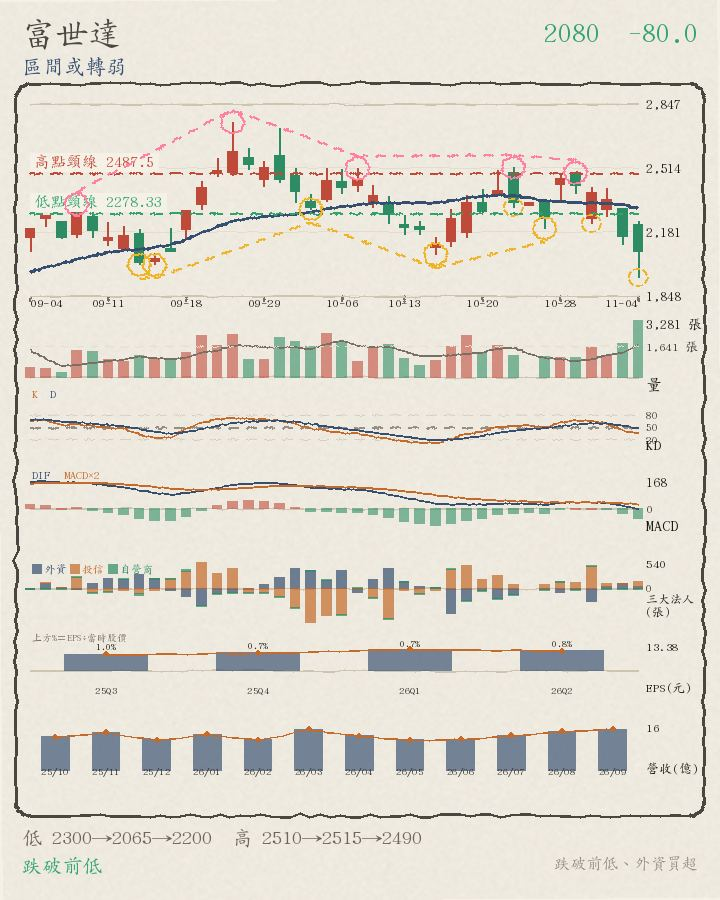
今天帶量收黑、跌破月線 2304，跌破前一個轉折低點（高點頸線 2487.5 還在收盤上方），轉折還沒走出明顯方向。
- 月線位置：收盤 2080 在月線 2304 之下；5 日線 2280 也在月線之下（短均在下）；月線走平或向下、5 日線走平或向下
- 量能：成交量是 20 日均量的 2.19 倍，比 20 日均量大不少；收黑卻量增，量價背離
- 關鍵價位：高點頸線 2487.5 還沒突破、還在收盤上方 16.4%；最近轉折高點 2490（低於 16.5%）；最近轉折低點 2200（低於 5.5%）
- 轉折結構：低點 2300、2065、2200 與高點 2510、2515、2490 都沒有明顯遞增，屬於區間震盪或轉弱；還沒確認的轉折低點 10-30 2225、11-04 1945（圖上虛線小圈）
區間或轉弱 成交金額 66.01 億・全榜第 44 名（上市第 35 名）
好條件 3/4：跌破前低、在月線之下、月線下彎
不好條件 1/5：外資賣超
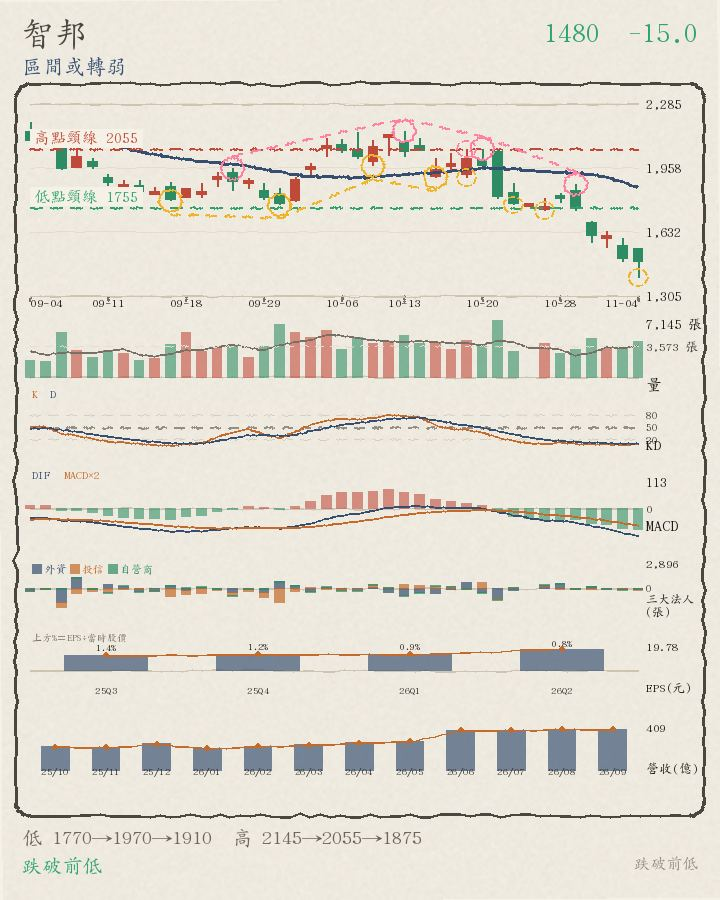
今天帶量收黑、跌破月線 1858，跌破前一個轉折低點（高點頸線 2055 還在收盤上方），轉折還沒走出明顯方向。
- 月線位置：收盤 1480 在月線 1858 之下；5 日線 1592 也在月線之下（短均在下）；月線走平或向下、5 日線走平或向下
- 量能：成交量是 20 日均量的 1.06 倍，比 20 日均量大一些；收黑卻量增，量價背離
- 關鍵價位：高點頸線 2055 還沒突破、還在收盤上方 28.0%；最近轉折高點 1875（低於 21.1%）；最近轉折低點 1910（低於 22.5%）
- 轉折結構：低點 1770、1970、1910 與高點 2145、2055、1875 都沒有明顯遞增，屬於區間震盪或轉弱；還沒確認的轉折低點 10-27 1740、11-04 1400；還沒確認的轉折高點 10-19 2055（圖上虛線小圈）
區間或轉弱 成交金額 61.01 億・全榜第 45 名（上市第 36 名）
好條件 3/4：跌破前低、在月線之下、月線下彎
不好條件 1/5：外資賣超
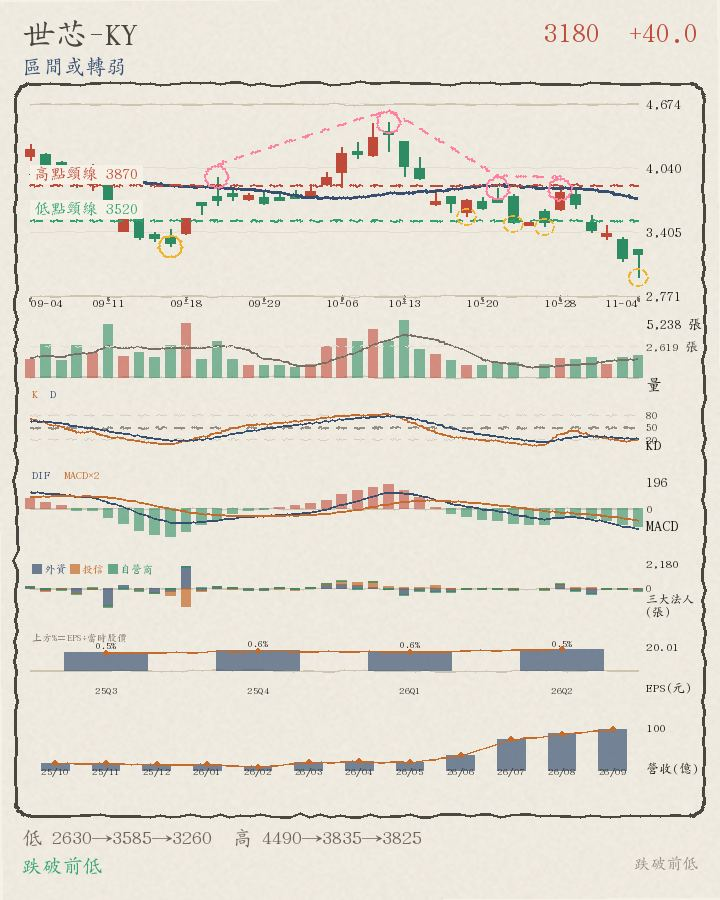
今天收紅、但成交量比平均少、跌破月線 3733.25，跌破前一個轉折低點（高點頸線 3870 還在收盤上方），轉折還沒走出明顯方向。
- 月線位置：收盤 3180 在月線 3733.25 之下；5 日線 3364 也在月線之下（短均在下）；月線走平或向下、5 日線走平或向下
- 量能：成交量是 20 日均量的 0.88 倍，比 20 日均量少一些；收紅但量縮，量價背離
- 關鍵價位：高點頸線 3870 還沒突破、還在收盤上方 17.8%；最近轉折高點 3825（低於 16.9%）；最近轉折低點 3260（低於 2.5%）
- 轉折結構：低點 2630、3585、3260 與高點 4490、3835、3825 都沒有明顯遞增，屬於區間震盪或轉弱；還沒確認的轉折低點 10-27 3455、11-04 2955（圖上虛線小圈）
區間或轉弱 成交金額 59.26 億・全榜第 47 名（上市第 37 名）
好條件 3/4：跌破前低、在月線之下、月線下彎
不好條件 1/5：外資賣超
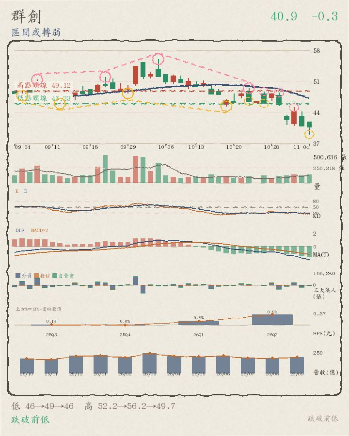
今天帶量收黑、跌破月線 47.45，跌破前一個轉折低點（高點頸線 49.12 還在收盤上方），轉折還沒走出明顯方向。
- 月線位置：收盤 40.9 在月線 47.45 之下；5 日線 43.04 也在月線之下（短均在下）；月線走平或向下、5 日線走平或向下
- 量能：成交量是 20 日均量的 1.18 倍，比 20 日均量大不少；收黑卻量增，量價背離
- 關鍵價位：高點頸線 49.12 還沒突破、還在收盤上方 16.7%；最近轉折高點 49.7（低於 17.7%）；最近轉折低點 45.65（低於 10.4%）
- 轉折結構：低點 46.25、48.55、45.65 與高點 52.2、56.2、49.7 都沒有明顯遞增，屬於區間震盪或轉弱；還沒確認的轉折低點 10-27 46.25、11-04 39.3；還沒確認的轉折高點 10-29 48.7、11-02 45.35（圖上虛線小圈）
區間或轉弱 成交金額 57.8 億・全榜第 48 名（上市第 38 名）
好條件 4/4：跌破前低、在月線之下、月線下彎、外資買超
不好條件 0/5：無
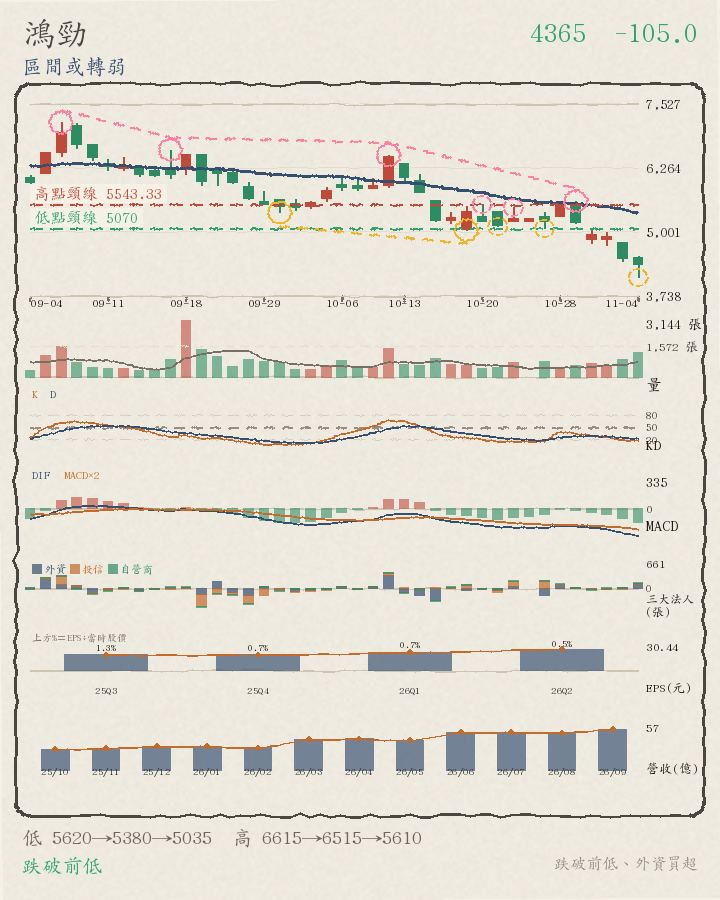
今天帶量收黑、跌破月線 5375.75，跌破前一個轉折低點（高點頸線 5543.33 還在收盤上方），轉折還沒走出明顯方向。
- 月線位置：收盤 4365 在月線 5375.75 之下；5 日線 4778 也在月線之下（短均在下）；月線走平或向下、5 日線走平或向下
- 量能：成交量是 20 日均量的 1.83 倍，比 20 日均量大不少；收黑卻量增，量價背離
- 關鍵價位：高點頸線 5543.33 還沒突破、還在收盤上方 21.3%；最近轉折高點 5610（低於 22.2%）；最近轉折低點 5035（低於 13.3%）
- 轉折結構：低點 5620、5380、5035 與高點 6615、6515、5610 都沒有明顯遞增，屬於區間震盪或轉弱；還沒確認的轉折低點 10-27 5070、11-04 4105；還沒確認的轉折高點 10-20 5540、10-22 5480（圖上虛線小圈）
區間或轉弱 成交金額 56.95 億・全榜第 49 名（上市第 39 名）
好條件 3/4：跌破前低、在月線之下、月線下彎
不好條件 1/5：外資賣超
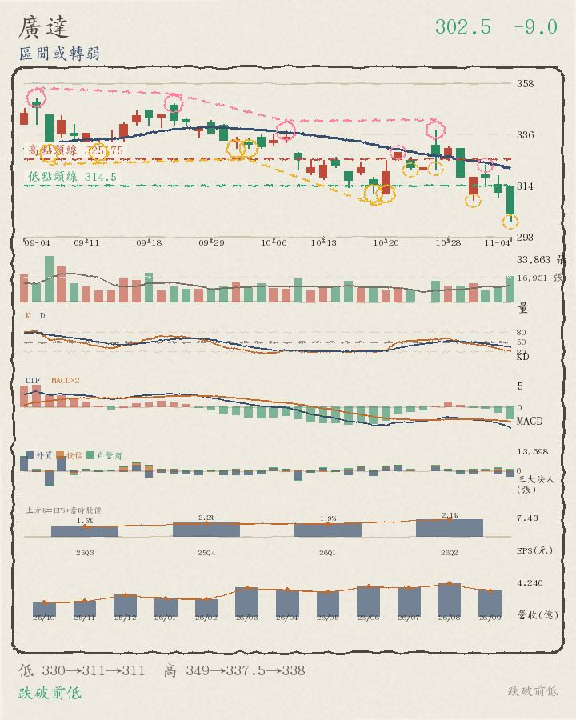
今天帶量收黑、跌破月線 321.675，跌破前一個轉折低點（高點頸線 325.75 還在收盤上方），轉折還沒走出明顯方向。
- 月線位置：收盤 302.5 在月線 321.675 之下；5 日線 313.6 也在月線之下（短均在下）；月線走平或向下、5 日線走平或向下
- 量能：成交量是 20 日均量的 1.70 倍，比 20 日均量大不少；收黑卻量增，量價背離
- 關鍵價位：高點頸線 325.75 還沒突破、還在收盤上方 7.1%；最近轉折高點 338（低於 10.5%）；最近轉折低點 311（低於 2.7%）
- 轉折結構：低點 330、311、311 與高點 349、337.5、338 都沒有明顯遞增，屬於區間震盪或轉弱；還沒確認的轉折低點 10-30 308、11-04 299；還沒確認的轉折高點 10-21 328.5、11-02 323（圖上虛線小圈）
底部墊高、未過前高 成交金額 55.32 億・全榜第 50 名（上市第 40 名）
好條件 3/4：跌破前低、在月線之下、月線下彎
不好條件 1/5：外資賣超
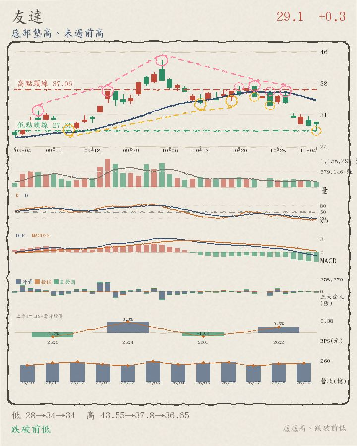
今天收紅、但成交量比平均少、跌破月線 34.58，跌破前一個轉折低點（高點頸線 37.06 還在收盤上方），底部還在墊高（但高點沒同步創高）。
- 月線位置：收盤 29.1 在月線 34.58 之下；5 日線 30.67 也在月線之下（短均在下）；月線走平或向下、5 日線走平或向下
- 量能：成交量是 20 日均量的 0.55 倍，比 20 日均量少很多；收紅但量縮，量價背離
- 關鍵價位：高點頸線 37.06 還沒突破、還在收盤上方 21.5%；最近轉折高點 36.65（低於 20.6%）；最近轉折低點 34.45（低於 15.5%）
- 轉折結構：低點 27.75、33.75、34.45 墊高 24.1%（底底高），但高點 43.55、37.8、36.65 沒有同步創高；還沒確認的轉折低點 10-27 33.45、11-04 27.55；還沒確認的轉折高點 10-20 37.65、10-27 36.55（圖上虛線小圈）
高點墊高、底部不穩 成交金額 54.91 億・全榜第 51 名（上市第 41 名）
好條件 2/4：在月線之下、月線下彎
不好條件 1/5：外資賣超
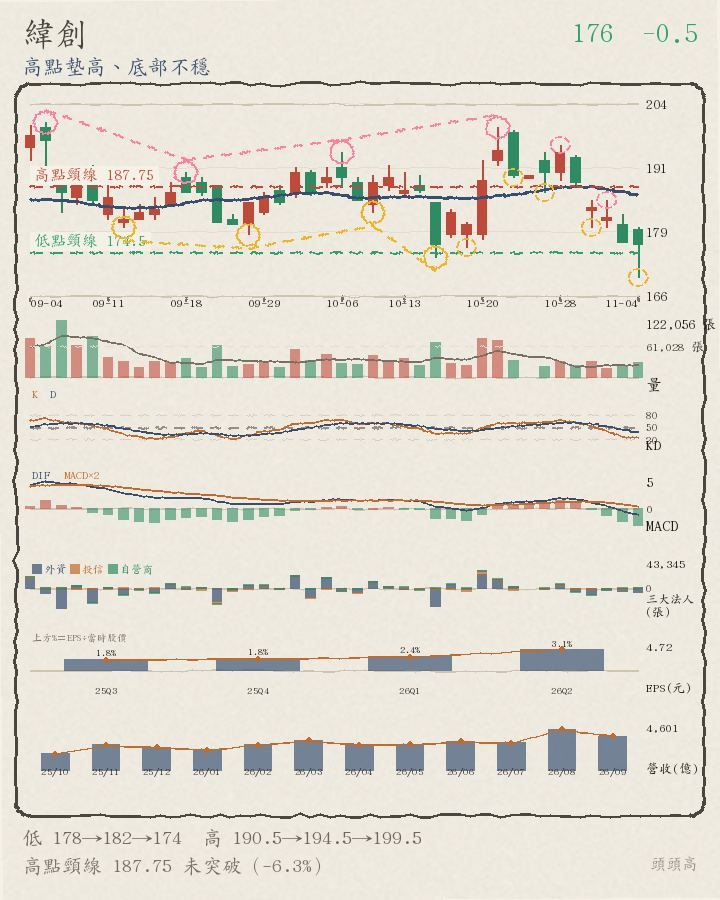
今天收黑、成交量也比平均少、跌破月線 186，離高點頸線 187.75 還差 6.3%，高點還在墊高（但底部沒同步墊高）。
- 月線位置：收盤 176 在月線 186 之下；5 日線 181.2 也在月線之下（短均在下）；月線走平或向下、5 日線走平或向下
- 量能：成交量是 20 日均量的 0.83 倍，比 20 日均量少很多
- 關鍵價位：高點頸線 187.75 還沒突破，差 6.3%；最近轉折高點 199.5（低於 11.8%）；最近轉折低點 173.5（高於 1.4%）
- 轉折結構：高點 190.5、194.5、199.5 墊高 4.7%（頭頭高），但低點 178、182.5、173.5 沒有同步墊高；還沒確認的轉折低點 10-30 179.5、11-04 169.5；還沒確認的轉折高點 10-28 196、11-02 185（圖上虛線小圈）
區間或轉弱 成交金額 53.36 億・全榜第 52 名（上市第 42 名）
好條件 3/4：跌破前低、在月線之下、月線下彎
不好條件 1/5：外資賣超
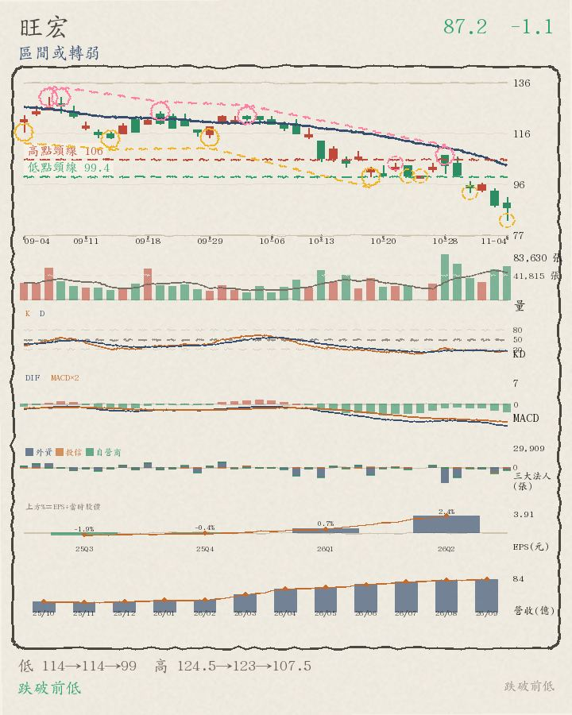
今天帶量收黑、跌破月線 103.73，跌破前一個轉折低點（高點頸線 106 還在收盤上方），轉折還沒走出明顯方向。
- 月線位置：收盤 87.2 在月線 103.73 之下；5 日線 93.42 也在月線之下（短均在下）；月線走平或向下、5 日線走平或向下
- 量能：成交量是 20 日均量的 1.71 倍，比 20 日均量大不少；收黑卻量增，量價背離
- 關鍵價位：高點頸線 106 還沒突破、還在收盤上方 17.7%；最近轉折高點 107.5（低於 18.9%）；最近轉折低點 99.2（低於 12.1%）
- 轉折結構：低點 114、114.5、99.2 與高點 124.5、123、107.5 都沒有明顯遞增，屬於區間震盪或轉弱；還沒確認的轉折低點 10-30 93.2、11-04 82.4；還沒確認的轉折高點 10-21 104.5（圖上虛線小圈）
區間或轉弱 成交金額 50.05 億・全榜第 53 名（上市第 43 名）
好條件 2/4：在月線之下、月線下彎
不好條件 1/5：外資賣超
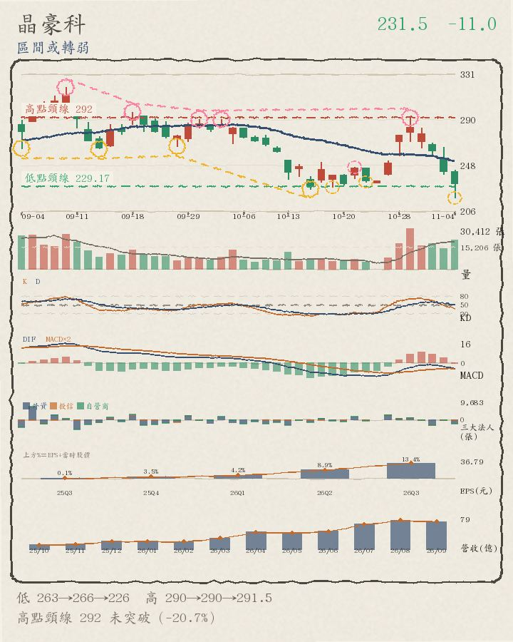
今天帶量收黑、跌破月線 251.95，離高點頸線 292 還差 20.7%，轉折還沒走出明顯方向。
- 月線位置：收盤 231.5 在月線 251.95 之下；5 日線 258.9 也在月線之上（短均在上）；月線走平或向下、5 日線向上
- 量能：成交量是 20 日均量的 2.02 倍，比 20 日均量大不少；收黑卻量增，量價背離
- 關鍵價位：高點頸線 292 還沒突破，差 20.7%；最近轉折高點 291.5（低於 20.6%）；最近轉折低點 226.5（高於 2.2%）
- 轉折結構：低點 263、265.5、226.5 與高點 290、290、291.5 都沒有明顯遞增，屬於區間震盪或轉弱；還沒確認的轉折低點 10-22 233、11-04 218.5；還沒確認的轉折高點 10-21 246.5（圖上虛線小圈）
矽力*-KY 6415 上市
457.5 -15.0
上升趨勢（底底高＋頭頭高） 成交金額 48.8 億・全榜第 54 名（上市第 44 名）
好條件 2/4：在月線之下、外資買超
不好條件 1/5：月線向上
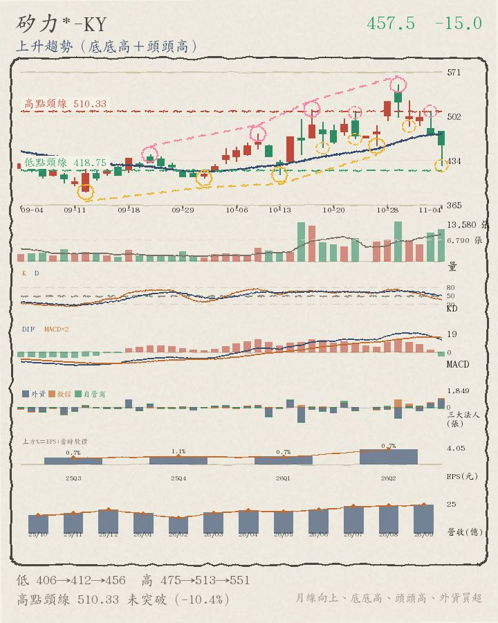
今天帶量收黑、跌破月線 474.775，離高點頸線 510.33 還差 10.4%，轉折結構仍是底底高＋頭頭高。
- 月線位置：收盤 457.5 在月線 474.775 之下；5 日線 491.4 也在月線之上（短均在上）；月線向上、5 日線向上
- 量能：成交量是 20 日均量的 1.71 倍，比 20 日均量大不少；收黑卻量增，量價背離
- 關鍵價位：高點頸線 510.33 還沒突破，差 10.4%；最近轉折高點 551（低於 17.0%）；最近轉折低點 456.5（高於 0.2%）
- 轉折結構：低點 406.5、412、456.5 一路墊高 12.3%、高點 475、513、551 也一路墊高 16.0%，是底底高＋頭頭高；還沒確認的轉折低點 10-30 486.5、11-04 425.5；還沒確認的轉折高點 10-22 508、11-03 510（圖上虛線小圈）
剛突破前高 成交金額 48.07 億・全榜第 55 名（上市第 45 名）
好條件 0/4：無
不好條件 5/5：站上月線、月線向上、突破頸線、量價攻擊（收紅＋大量）、外資賣超
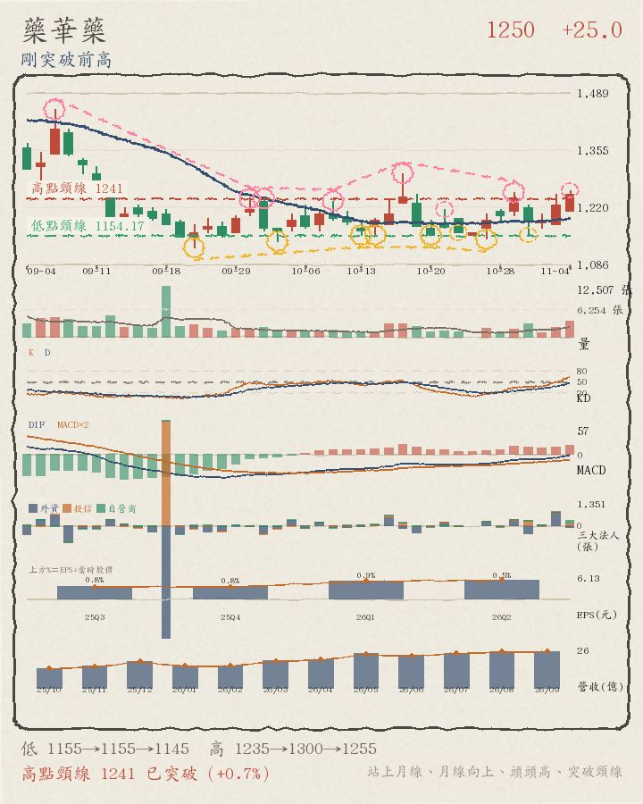
今天帶量收紅、站上月線 1193.75，已站上高點頸線 1241，高點還在墊高（但底部沒同步墊高）。
- 月線位置：收盤 1250 在月線 1193.75 之上；5 日線 1219 也在月線之上（短均在上）；月線向上、5 日線向上
- 量能：成交量是 20 日均量的 2.20 倍，比 20 日均量大不少；收紅又量增，量價配合
- 關鍵價位：高點頸線 1241 已站上；最近轉折高點 1255（低於 0.4%）；最近轉折低點 1145（高於 9.2%）
- 轉折結構：高點 1235、1300、1255 墊高 0.4%（頭頭高），但低點 1155、1155、1145 沒有同步墊高；還沒確認的轉折低點 10-22 1160、10-30 1155；還沒確認的轉折高點 10-21 1215、11-04 1260（圖上虛線小圈）
區間或轉弱 成交金額 47.38 億・全榜第 56 名（上市第 46 名）
好條件 4/4：跌破前低、在月線之下、月線下彎、外資買超
不好條件 0/5：無
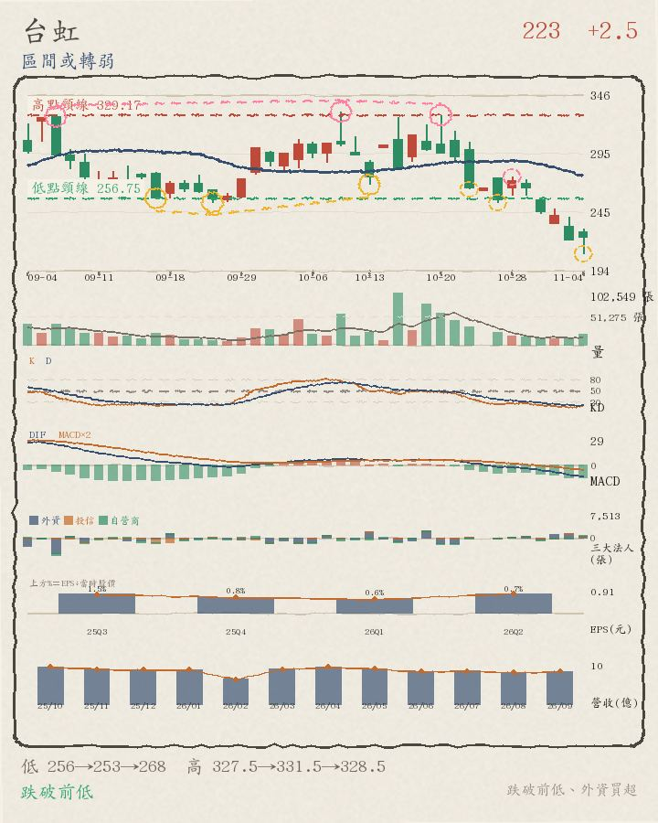
今天收紅、但成交量比平均少、跌破月線 275.925，跌破前一個轉折低點（高點頸線 329.17 還在收盤上方），轉折還沒走出明顯方向。
- 月線位置：收盤 223 在月線 275.925 之下；5 日線 239.2 也在月線之下（短均在下）；月線走平或向下、5 日線走平或向下
- 量能：成交量是 20 日均量的 0.63 倍，比 20 日均量少很多；收紅但量縮，量價背離
- 關鍵價位：高點頸線 329.17 還沒突破、還在收盤上方 32.3%；最近轉折高點 328.5（低於 32.1%）；最近轉折低點 268.5（低於 16.9%）
- 轉折結構：低點 256.5、253、268.5 與高點 327.5、331.5、328.5 都沒有明顯遞增，屬於區間震盪或轉弱；還沒確認的轉折低點 10-27 253、11-04 208.5；還沒確認的轉折高點 10-28 275（圖上虛線小圈）
區間或轉弱 成交金額 45.34 億・全榜第 57 名（上市第 47 名）
好條件 4/4：跌破前低、在月線之下、月線下彎、外資買超
不好條件 0/5：無
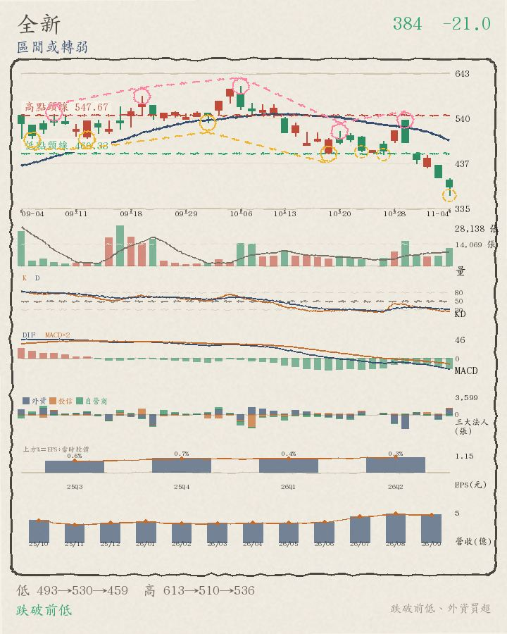
今天帶量收黑、跌破月線 490.225，跌破前一個轉折低點（高點頸線 547.67 還在收盤上方），轉折還沒走出明顯方向。
- 月線位置：收盤 384 在月線 490.225 之下；5 日線 433.9 也在月線之下（短均在下）；月線走平或向下、5 日線走平或向下
- 量能：成交量是 20 日均量的 1.53 倍，比 20 日均量大不少；收黑卻量增，量價背離
- 關鍵價位：高點頸線 547.67 還沒突破、還在收盤上方 29.9%；最近轉折高點 536（低於 28.4%）；最近轉折低點 459（低於 16.3%）
- 轉折結構：低點 493、530、459 與高點 613、510、536 都沒有明顯遞增，屬於區間震盪或轉弱；還沒確認的轉折低點 10-27 458、11-04 364.5（圖上虛線小圈）
上升趨勢（底底高＋頭頭高） 成交金額 44.86 億・全榜第 58 名（上市第 48 名）
好條件 3/4：跌破前低、在月線之下、月線下彎
不好條件 1/5：外資賣超
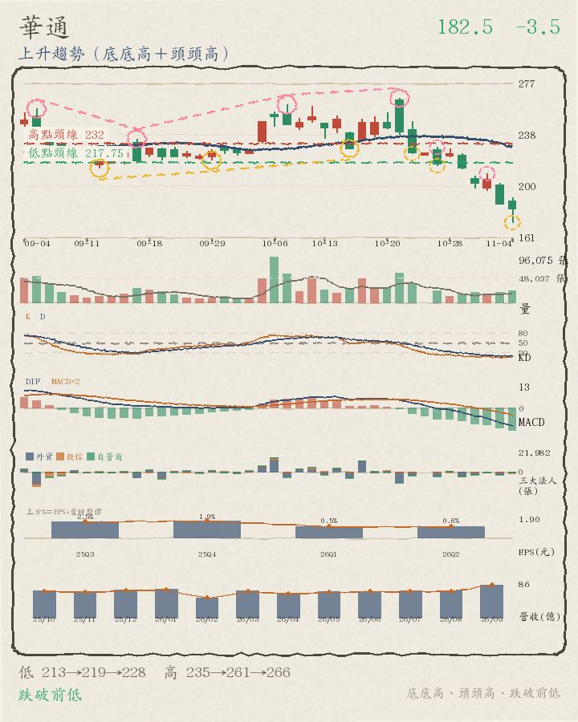
今天收黑、成交量也比平均少、跌破月線 228.9，跌破前一個轉折低點（高點頸線 232 還在收盤上方），轉折結構仍是底底高＋頭頭高。
- 月線位置：收盤 182.5 在月線 228.9 之下；5 日線 197.8 也在月線之下（短均在下）；月線走平或向下、5 日線走平或向下
- 量能：成交量是 20 日均量的 0.69 倍，比 20 日均量少很多
- 關鍵價位：高點頸線 232 還沒突破、還在收盤上方 21.3%；最近轉折高點 266（低於 31.4%）；最近轉折低點 228（低於 20.0%）
- 轉折結構：低點 213、219、228 一路墊高 7.0%、高點 235、261、266 也一路墊高 13.2%，是底底高＋頭頭高；還沒確認的轉折低點 10-27 215、11-04 172；還沒確認的轉折高點 10-27 229、11-02 209（圖上虛線小圈）
底部墊高、未過前高 成交金額 43.24 億・全榜第 59 名（上市第 49 名）
好條件 2/4：跌破前低、在月線之下
不好條件 2/5：月線向上、外資賣超
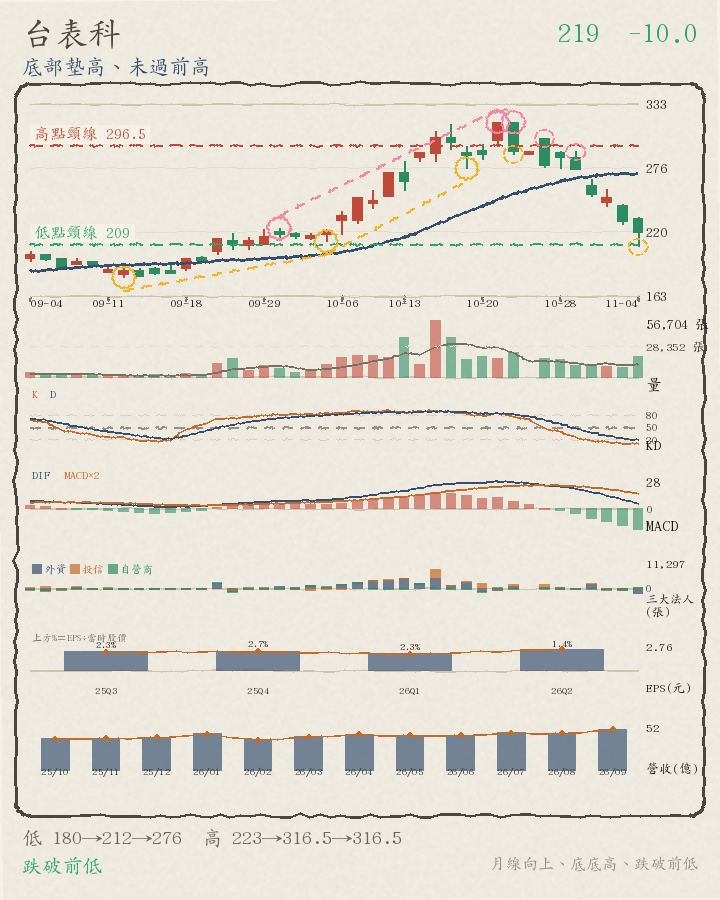
今天收黑、成交量也比平均少、跌破月線 271.275，跌破前一個轉折低點（高點頸線 296.5 還在收盤上方），底部還在墊高（但高點沒同步創高）。
- 月線位置：收盤 219 在月線 271.275 之下；5 日線 245.2 也在月線之下（短均在下）；月線向上、5 日線走平或向下
- 量能：成交量是 20 日均量的 0.95 倍，跟 20 日均量差不多
- 關鍵價位：高點頸線 296.5 還沒突破、還在收盤上方 26.1%；最近轉折高點 316.5（低於 30.8%）；最近轉折低點 276（低於 20.7%）
- 轉折結構：低點 179.5、211.5、276 墊高 53.8%（底底高），但高點 223、316.5、316.5 沒有同步創高；還沒確認的轉折低點 10-22 288.5、11-04 206.5；還沒確認的轉折高點 10-27 302.5、10-29 290.5（圖上虛線小圈）
區間或轉弱 成交金額 39.46 億・全榜第 61 名（上市第 50 名）
好條件 4/4：跌破前低、在月線之下、月線下彎、外資買超
不好條件 0/5：無
今天帶量收黑、跌破月線 5050.5，跌破前一個轉折低點（高點頸線 5076.25 還在收盤上方），轉折還沒走出明顯方向。
- 月線位置：收盤 4020 在月線 5050.5 之下；5 日線 4360 也在月線之下（短均在下）；月線走平或向下、5 日線走平或向下
- 量能：成交量是 20 日均量的 1.67 倍，比 20 日均量大不少；收黑卻量增，量價背離
- 關鍵價位：高點頸線 5076.25 還沒突破、還在收盤上方 20.8%；最近轉折高點 6285（低於 36.0%）；最近轉折低點 4945（低於 18.7%）
- 轉折結構：低點 5530、5445、4945 與高點 7370、8260、6285 都沒有明顯遞增，屬於區間震盪或轉弱；還沒確認的轉折低點 10-30 4290、11-04 3695；還沒確認的轉折高點 10-28 4995、11-02 4625（圖上虛線小圈）
底部墊高、未過前高 成交金額 270.64 億・全榜第 8 名（上櫃第 1 名）
好條件 1/4：在月線之下
不好條件 3/5：月線向上、量價攻擊（收紅＋大量）、外資賣超

今天帶量收紅、跌破月線 136.775，離高點頸線 146.25 還差 7.7%，底部還在墊高（但高點沒同步創高）。
- 月線位置：收盤 135 在月線 136.775 之下；5 日線 133.7 也在月線之下（短均在下）；月線向上、5 日線走平或向下
- 量能：成交量是 20 日均量的 1.89 倍，比 20 日均量大不少；收紅又量增，量價配合
- 關鍵價位：高點頸線 146.25 還沒突破，差 7.7%；最近轉折高點 149（低於 9.4%）；最近轉折低點 124（高於 8.9%）
- 轉折結構：低點 111、113、124 墊高 11.7%（底底高），但高點 129.5、161.5、149 沒有同步創高；還沒確認的轉折低點 11-02 122、11-04 127；還沒確認的轉折高點 11-02 139、11-04 143.5（圖上虛線小圈）
區間或轉弱 成交金額 202.86 億・全榜第 12 名（上櫃第 2 名）
好條件 3/4：跌破前低、在月線之下、月線下彎
不好條件 2/5：量價攻擊（收紅＋大量）、外資賣超
今天帶量收紅、跌破月線 1491.25，跌破前一個轉折低點（高點頸線 1447.5 還在收盤上方），轉折還沒走出明顯方向。
- 月線位置：收盤 1115 在月線 1491.25 之下；5 日線 1214 也在月線之下（短均在下）；月線走平或向下、5 日線走平或向下
- 量能：成交量是 20 日均量的 1.65 倍，比 20 日均量大不少；收紅又量增，量價配合
- 關鍵價位：高點頸線 1447.5 還沒突破、還在收盤上方 23.0%；最近轉折高點 1450（低於 23.1%）；最近轉折低點 1275（低於 12.5%）
- 轉折結構：低點 1395、1295、1275 與高點 1460、1835、1450 都沒有明顯遞增，屬於區間震盪或轉弱；還沒確認的轉折低點 10-27 1280、11-04 1010；還沒確認的轉折高點 10-20 1650、10-27 1450（圖上虛線小圈）
區間或轉弱 成交金額 157.58 億・全榜第 19 名（上櫃第 3 名）
好條件 1/4：在月線之下
不好條件 2/5：月線向上、外資賣超
今天帶量收黑、跌破月線 536，離高點頸線 595 還差 15.8%，轉折還沒走出明顯方向。
- 月線位置：收盤 501 在月線 536 之下；5 日線 558.2 也在月線之上（短均在上）；月線向上、5 日線向上
- 量能：成交量是 20 日均量的 1.34 倍，比 20 日均量大不少；收黑卻量增，量價背離
- 關鍵價位：高點頸線 595 還沒突破，差 15.8%；最近轉折高點 630（低於 20.5%）；最近轉折低點 479（高於 4.6%）
- 轉折結構：低點 482、454、479 與高點 492、478、630 都沒有明顯遞增，屬於區間震盪或轉弱；還沒確認的轉折低點 10-30 541、11-04 477；還沒確認的轉折高點 10-29 594、11-02 596（圖上虛線小圈）
區間或轉弱 成交金額 149.08 億・全榜第 21 名（上櫃第 4 名）
好條件 3/4：跌破前低、在月線之下、月線下彎
不好條件 1/5：外資賣超
今天帶量收黑、跌破月線 904，跌破前一個轉折低點（高點頸線 1013.33 還在收盤上方），轉折還沒走出明顯方向。
- 月線位置：收盤 619 在月線 904 之下；5 日線 726.8 也在月線之下（短均在下）；月線走平或向下、5 日線走平或向下
- 量能：成交量是 20 日均量的 2.10 倍，比 20 日均量大不少；收黑卻量增，量價背離
- 關鍵價位：高點頸線 1013.33 還沒突破、還在收盤上方 38.9%；最近轉折高點 1260（低於 50.9%）；最近轉折低點 872（低於 29.0%）
- 轉折結構：低點 931、875、872 與高點 1015、1010、1260 都沒有明顯遞增，屬於區間震盪或轉弱；還沒確認的轉折低點 10-27 807、11-04 617；還沒確認的轉折高點 10-21 903、10-28 860（圖上虛線小圈）
區間或轉弱 成交金額 108.67 億・全榜第 30 名（上櫃第 5 名）
好條件 4/4：跌破前低、在月線之下、月線下彎、外資買超
不好條件 0/5：無
今天帶量收黑、跌破月線 2599.25，跌破前一個轉折低點（高點頸線 2940 還在收盤上方），轉折還沒走出明顯方向。
- 月線位置：收盤 2100 在月線 2599.25 之下；5 日線 2327 也在月線之下（短均在下）；月線走平或向下、5 日線走平或向下
- 量能：成交量是 20 日均量的 1.60 倍，比 20 日均量大不少；收黑卻量增，量價背離
- 關鍵價位：高點頸線 2940 還沒突破、還在收盤上方 28.6%；最近轉折高點 2795（低於 24.9%）；最近轉折低點 2365（低於 11.2%）
- 轉折結構：低點 2650、2585、2365 與高點 2950、3210、2795 都沒有明顯遞增，屬於區間震盪或轉弱；還沒確認的轉折低點 10-19 2385、11-04 1960；還沒確認的轉折高點 10-21 2640、11-02 2465（圖上虛線小圈）
區間或轉弱 成交金額 101.03 億・全榜第 32 名（上櫃第 6 名）
好條件 3/4：跌破前低、在月線之下、月線下彎
不好條件 1/5：外資賣超
今天帶量收黑、跌破月線 16512.8，跌破前一個轉折低點（高點頸線 17245 還在收盤上方），轉折還沒走出明顯方向。
- 月線位置：收盤 14035 在月線 16512.8 之下；5 日線 15468 也在月線之下（短均在下）；月線走平或向下、5 日線走平或向下
- 量能：成交量是 20 日均量的 2.35 倍，比 20 日均量大不少；收黑卻量增，量價背離
- 關鍵價位：高點頸線 17245 還沒突破、還在收盤上方 18.6%；最近轉折高點 17490（低於 19.8%）；最近轉折低點 15500（低於 9.5%）
- 轉折結構：低點 17170、15975、15500 與高點 19895、18465、17490 都沒有明顯遞增，屬於區間震盪或轉弱；還沒確認的轉折低點 10-27 15800、11-04 13260；還沒確認的轉折高點 10-22 17000（圖上虛線小圈）
區間或轉弱 成交金額 83.63 億・全榜第 36 名（上櫃第 7 名）
好條件 4/4：跌破前低、在月線之下、月線下彎、外資買超
不好條件 0/5：無
今天帶量收黑、跌破月線 5124.5，跌破前一個轉折低點（高點頸線 5230 還在收盤上方），轉折還沒走出明顯方向。
- 月線位置：收盤 4135 在月線 5124.5 之下；5 日線 4486 也在月線之下（短均在下）；月線走平或向下、5 日線走平或向下
- 量能：成交量是 20 日均量的 2.45 倍，比 20 日均量大不少；收黑卻量增，量價背離
- 關鍵價位：高點頸線 5230 還沒突破、還在收盤上方 20.9%；最近轉折高點 5150（低於 19.7%）；最近轉折低點 4995（低於 17.2%）
- 轉折結構：低點 5365、5090、4995 與高點 5860、6160、5150 都沒有明顯遞增，屬於區間震盪或轉弱；還沒確認的轉折低點 10-30 4390、11-04 3775；還沒確認的轉折高點 10-22 5170、11-02 4790（圖上虛線小圈）
區間或轉弱 成交金額 83.45 億・全榜第 37 名（上櫃第 8 名）
好條件 3/4：跌破前低、在月線之下、月線下彎
不好條件 1/5：外資賣超
今天帶量收黑、跌破月線 1418.25，跌破前一個轉折低點（高點頸線 1511.67 還在收盤上方），轉折還沒走出明顯方向。
- 月線位置：收盤 1300 在月線 1418.25 之下；5 日線 1362 也在月線之下（短均在下）；月線走平或向下、5 日線走平或向下
- 量能：成交量是 20 日均量的 1.86 倍，比 20 日均量大不少；收黑卻量增，量價背離
- 關鍵價位：高點頸線 1511.67 還沒突破、還在收盤上方 14.0%；最近轉折高點 1515（低於 14.2%）；最近轉折低點 1310（低於 0.8%）
- 轉折結構：低點 1395、1320、1310 與高點 1750、1515、1515 都沒有明顯遞增，屬於區間震盪或轉弱；還沒確認的轉折低點 11-02 1280、11-04 1190；還沒確認的轉折高點 11-03 1445（圖上虛線小圈）
區間或轉弱 成交金額 67.48 億・全榜第 41 名（上櫃第 9 名）
好條件 4/4：跌破前低、在月線之下、月線下彎、外資買超
不好條件 1/5：量價攻擊（收紅＋大量）
今天帶量收紅、跌破月線 1925，跌破前一個轉折低點（高點頸線 1945 還在收盤上方），轉折還沒走出明顯方向。
- 月線位置：收盤 1710 在月線 1925 之下；5 日線 1851 也在月線之下（短均在下）；月線走平或向下、5 日線走平或向下
- 量能：成交量是 20 日均量的 1.68 倍，比 20 日均量大不少；收紅又量增，量價配合
- 關鍵價位：高點頸線 1945 還沒突破、還在收盤上方 12.1%；最近轉折高點 2090（低於 18.2%）；最近轉折低點 1865（低於 8.3%）
- 轉折結構：低點 2080、1785、1865 與高點 2160、2350、2090 都沒有明顯遞增，屬於區間震盪或轉弱；還沒確認的轉折低點 10-22 1870、11-04 1590；還沒確認的轉折高點 10-21 1945、10-22 1945（圖上虛線小圈）
區間或轉弱 成交金額 60.63 億・全榜第 46 名（上櫃第 10 名）
好條件 4/4：跌破前低、在月線之下、月線下彎、外資買超
不好條件 0/5：無
今天帶量收黑、跌破月線 464.1，跌破前一個轉折低點（高點頸線 571 還在收盤上方），轉折還沒走出明顯方向。
- 月線位置：收盤 366.5 在月線 464.1 之下；5 日線 400.7 也在月線之下（短均在下）；月線走平或向下、5 日線走平或向下
- 量能：成交量是 20 日均量的 1.50 倍，比 20 日均量大不少；收黑卻量增，量價背離
- 關鍵價位：高點頸線 571 還沒突破、還在收盤上方 35.8%；最近轉折高點 510（低於 28.1%）；最近轉折低點 399.5（低於 8.3%）
- 轉折結構：低點 469.5、477、399.5 與高點 535、578、510 都沒有明顯遞增，屬於區間震盪或轉弱；還沒確認的轉折低點 10-30 399.5、11-04 340；還沒確認的轉折高點 10-28 460、11-03 428（圖上虛線小圈）
區間或轉弱 成交金額 42.43 億・全榜第 60 名（上櫃第 11 名）
好條件 4/4：跌破前低、在月線之下、月線下彎、外資買超
不好條件 0/5：無
今天收紅、但成交量比平均少、跌破月線 208.775，跌破前一個轉折低點（高點頸線 220 還在收盤上方），轉折還沒走出明顯方向。
- 月線位置：收盤 175 在月線 208.775 之下；5 日線 187.6 也在月線之下（短均在下）；月線走平或向下、5 日線走平或向下
- 量能：成交量是 20 日均量的 0.85 倍，比 20 日均量少一些；收紅但量縮，量價背離
- 關鍵價位：高點頸線 220 還沒突破、還在收盤上方 20.5%；最近轉折高點 223（低於 21.5%）；最近轉折低點 194.5（低於 10.0%）
- 轉折結構：低點 208、211、194.5 與高點 238、217、223 都沒有明顯遞增，屬於區間震盪或轉弱；還沒確認的轉折低點 10-27 199.5、11-04 160（圖上虛線小圈）
區間或轉弱 成交金額 38.98 億・全榜第 62 名（上櫃第 12 名）
好條件 4/4：跌破前低、在月線之下、月線下彎、外資買超
不好條件 0/5：無
今天帶量收黑、跌破月線 1360.25，跌破前一個轉折低點（高點頸線 1432.5 還在收盤上方），轉折還沒走出明顯方向。
- 月線位置：收盤 1065 在月線 1360.25 之下；5 日線 1158 也在月線之下（短均在下）；月線走平或向下、5 日線走平或向下
- 量能：成交量是 20 日均量的 1.38 倍，比 20 日均量大不少；收黑卻量增，量價背離
- 關鍵價位：高點頸線 1432.5 還沒突破、還在收盤上方 25.7%；最近轉折高點 1360（低於 21.7%）；最近轉折低點 1180（低於 9.7%）
- 轉折結構：低點 1185、1180、1180 與高點 1270、1680、1360 都沒有明顯遞增，屬於區間震盪或轉弱；還沒確認的轉折低點 10-30 1135、11-04 980；還沒確認的轉折高點 10-20 1430、11-02 1210（圖上虛線小圈）
區間或轉弱 成交金額 38.93 億・全榜第 63 名（上櫃第 13 名）
好條件 4/4：跌破前低、在月線之下、月線下彎、外資買超
不好條件 0/5：無
今天帶量收黑、跌破月線 2640.5，跌破前一個轉折低點（高點頸線 2797.5 還在收盤上方），轉折還沒走出明顯方向。
- 月線位置：收盤 2160 在月線 2640.5 之下；5 日線 2349 也在月線之下（短均在下）；月線走平或向下、5 日線走平或向下
- 量能：成交量是 20 日均量的 2.10 倍，比 20 日均量大不少；收黑卻量增，量價背離
- 關鍵價位：高點頸線 2797.5 還沒突破、還在收盤上方 22.8%；最近轉折高點 2675（低於 19.3%）；最近轉折低點 2470（低於 12.6%）
- 轉折結構：低點 2090、2530、2470 與高點 2875、3635、2675 都沒有明顯遞增，屬於區間震盪或轉弱；還沒確認的轉折低點 10-27 2470、11-04 2005；還沒確認的轉折高點 10-20 2770（圖上虛線小圈）
區間或轉弱 成交金額 35.06 億・全榜第 64 名（上櫃第 14 名）
好條件 4/4：跌破前低、在月線之下、月線下彎、外資買超
不好條件 0/5：無
今天帶量收黑、跌破月線 108.38，跌破前一個轉折低點（高點頸線 140 還在收盤上方），轉折還沒走出明顯方向。
- 月線位置：收盤 82.8 在月線 108.38 之下；5 日線 91.32 也在月線之下（短均在下）；月線走平或向下、5 日線走平或向下
- 量能：成交量是 20 日均量的 1.27 倍，比 20 日均量大不少；收黑卻量增，量價背離
- 關鍵價位：高點頸線 140 還沒突破、還在收盤上方 40.9%；最近轉折高點 113（低於 26.7%）；最近轉折低點 103.5（低於 20.0%）
- 轉折結構：低點 104、100、103.5 與高點 140、140、113 都沒有明顯遞增，屬於區間震盪或轉弱；還沒確認的轉折低點 10-27 100.5、11-04 77；還沒確認的轉折高點 10-27 107.5（圖上虛線小圈）
區間或轉弱 成交金額 33.09 億・全榜第 65 名（上櫃第 15 名）
好條件 4/4：跌破前低、在月線之下、月線下彎、外資買超
不好條件 0/5：無
今天帶量收黑、跌破月線 494.125，跌破前一個轉折低點（高點頸線 654 還在收盤上方），轉折還沒走出明顯方向。
- 月線位置：收盤 376 在月線 494.125 之下；5 日線 421.9 也在月線之下（短均在下）；月線走平或向下、5 日線走平或向下
- 量能：成交量是 20 日均量的 1.64 倍，比 20 日均量大不少；收黑卻量增，量價背離
- 關鍵價位：高點頸線 654 還沒突破、還在收盤上方 42.5%；最近轉折高點 531（低於 29.2%）；最近轉折低點 445（低於 15.5%）
- 轉折結構：低點 501、545、445 與高點 622、588、531 都沒有明顯遞增，屬於區間震盪或轉弱；還沒確認的轉折低點 10-27 450、11-04 347.5；還沒確認的轉折高點 10-22 490（圖上虛線小圈）
區間或轉弱 成交金額 32.57 億・全榜第 66 名（上櫃第 16 名）
好條件 1/4：在月線之下
不好條件 3/5：月線向上、量價攻擊（收紅＋大量）、外資賣超
今天帶量收紅、跌破月線 136.4，離高點頸線 141 還差 5.7%，轉折還沒走出明顯方向。
- 月線位置：收盤 133 在月線 136.4 之下；5 日線 130.5 也在月線之下（短均在下）；月線向上、5 日線走平或向下
- 量能：成交量是 20 日均量的 1.59 倍，比 20 日均量大不少；收紅又量增，量價配合
- 關鍵價位：高點頸線 141 還沒突破，差 5.7%；最近轉折高點 144.5（低於 8.0%）；最近轉折低點 129.5（高於 2.7%）
- 轉折結構：低點 110、129、129.5 與高點 166、154.5、144.5 都沒有明顯遞增，屬於區間震盪或轉弱；還沒確認的轉折低點 10-29 131、11-04 120；還沒確認的轉折高點 10-27 141、11-03 137.5（圖上虛線小圈）
區間或轉弱 成交金額 28.79 億・全榜第 67 名（上櫃第 17 名）
好條件 4/4：跌破前低、在月線之下、月線下彎、外資買超
不好條件 0/5：無
今天帶量收黑、跌破月線 284.051，跌破前一個轉折低點（高點頸線 303.91 還在收盤上方），轉折還沒走出明顯方向。
- 月線位置：收盤 235 在月線 284.051 之下；5 日線 259.1 也在月線之下（短均在下）；月線走平或向下、5 日線走平或向下
- 量能：成交量是 20 日均量的 1.17 倍，比 20 日均量大不少；收黑卻量增，量價背離
- 關鍵價位：高點頸線 303.91 還沒突破、還在收盤上方 22.7%；最近轉折高點 312.5（低於 24.8%）；最近轉折低點 248（低於 5.2%）
- 轉折結構：低點 302.128、302.128、248 與高點 302.128、302.128、312.5 都沒有明顯遞增，屬於區間震盪或轉弱；還沒確認的轉折低點 10-27 274.5、11-04 218.5；還沒確認的轉折高點 10-29 306、11-03 266.5（圖上虛線小圈）
上升趨勢（底底高＋頭頭高） 成交金額 24.73 億・全榜第 68 名（上櫃第 18 名）
好條件 0/4：無
不好條件 3/5：站上月線、月線向上、外資賣超
今天帶量收黑、站上月線 83.695，離高點頸線 93.75 還差 5.0%，轉折結構仍是底底高＋頭頭高。
- 月線位置：收盤 89.1 在月線 83.695 之上；5 日線 90.42 也在月線之上（短均在上）；月線向上、5 日線走平或向下
- 量能：成交量是 20 日均量的 1.99 倍，比 20 日均量大不少；收黑卻量增，量價背離
- 關鍵價位：高點頸線 93.75 還沒突破，差 5.0%；最近轉折高點 99.6（低於 10.5%）；最近轉折低點 73.4（高於 21.4%）
- 轉折結構：低點 48.3、61.3、73.4 一路墊高 52.0%、高點 68、86.3、99.6 也一路墊高 46.5%，是底底高＋頭頭高；還沒確認的轉折低點 10-30 86.5、11-04 85；還沒確認的轉折高點 10-22 92、11-04 95.5（圖上虛線小圈）
區間或轉弱 成交金額 23.34 億・全榜第 69 名（上櫃第 19 名）
好條件 3/4：跌破前低、在月線之下、月線下彎
不好條件 1/5：外資賣超
今天收紅、但成交量比平均少、跌破月線 245.575，跌破前一個轉折低點（高點頸線 256.5 還在收盤上方），轉折還沒走出明顯方向。
- 月線位置：收盤 197 在月線 245.575 之下；5 日線 213.1 也在月線之下（短均在下）；月線走平或向下、5 日線走平或向下
- 量能：成交量是 20 日均量的 0.63 倍，比 20 日均量少很多；收紅但量縮，量價背離
- 關鍵價位：高點頸線 256.5 還沒突破、還在收盤上方 23.2%；最近轉折高點 279.5（低於 29.5%）；最近轉折低點 241.5（低於 18.4%）
- 轉折結構：低點 238、238、241.5 與高點 289.5、291.5、279.5 都沒有明顯遞增，屬於區間震盪或轉弱；還沒確認的轉折低點 10-28 234.5、11-04 184；還沒確認的轉折高點 10-27 261.5（圖上虛線小圈）
區間或轉弱 成交金額 22.24 億・全榜第 70 名（上櫃第 20 名）
好條件 3/4：跌破前低、在月線之下、月線下彎
不好條件 2/5：量價攻擊（收紅＋大量）、外資賣超
今天收紅、跌破月線 3051.25，跌破前一個轉折低點（高點頸線 3270 還在收盤上方），轉折還沒走出明顯方向。
- 月線位置：收盤 2770 在月線 3051.25 之下；5 日線 2789 也在月線之下（短均在下）；月線走平或向下、5 日線走平或向下
- 量能：成交量是 20 日均量的 1.01 倍，跟 20 日均量差不多
- 關鍵價位：高點頸線 3270 還沒突破、還在收盤上方 15.3%；最近轉折高點 3345（低於 17.2%）；最近轉折低點 2825（低於 1.9%）
- 轉折結構：低點 2960、3000、2825 與高點 3775、3580、3345 都沒有明顯遞增，屬於區間震盪或轉弱；還沒確認的轉折低點 10-30 2635、11-04 2595；還沒確認的轉折高點 10-29 3200、11-02 2980（圖上虛線小圈）